-
To verify the Asset CD Master full flow
12:55:30 pm / 45:45:192 Fail
To verify the Asset CD Master full flow
10.18.2022 12:55:30 10.18.2022 13:11:16 45:45:192 · #test-id=1PassTo verify the Asset CD Master all flowGiven User login as uls maker in asset CD masterstepdefinitions.HooksClass.addScreenshot(io.cucumber.java.Scenario)screenshot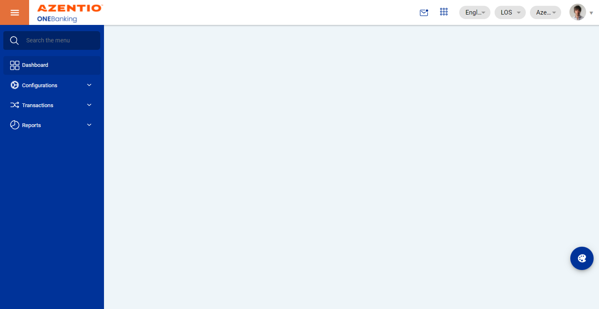Then User click the Configurations in asset auto masterstepdefinitions.HooksClass.addScreenshot(io.cucumber.java.Scenario)screenshot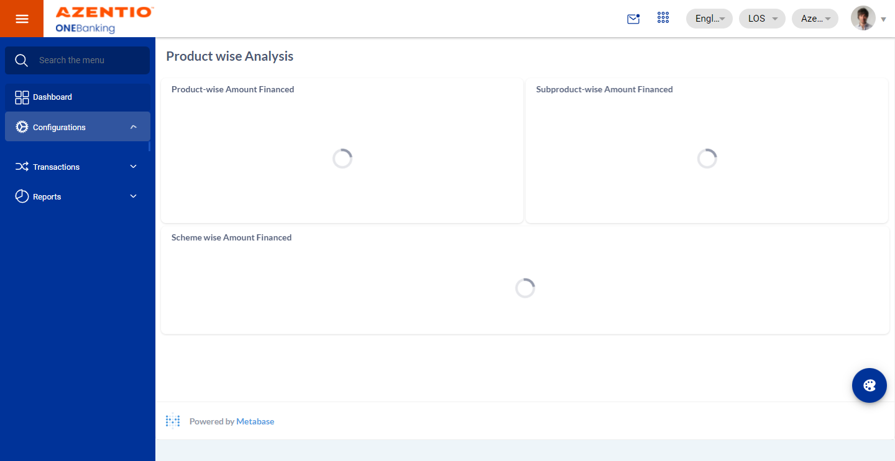And User click the config manager in Bounce masterstepdefinitions.HooksClass.addScreenshot(io.cucumber.java.Scenario)screenshot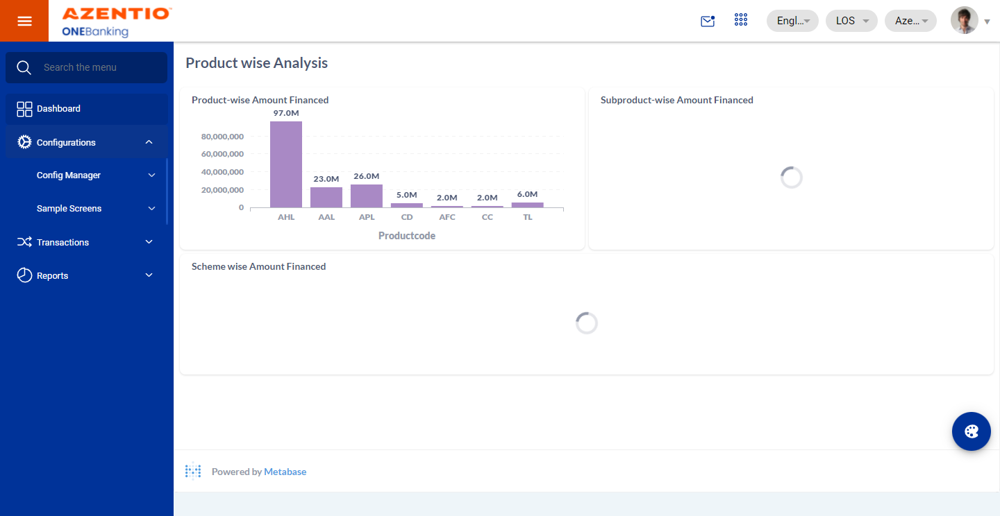And User click the edit icon in asset CD masterstepdefinitions.HooksClass.addScreenshot(io.cucumber.java.Scenario)screenshotAnd User click the add icon in asset CD masterstepdefinitions.HooksClass.addScreenshot(io.cucumber.java.Scenario)screenshotAnd User verify the save back help button in asset CD masterstepdefinitions.HooksClass.addScreenshot(io.cucumber.java.Scenario)screenshot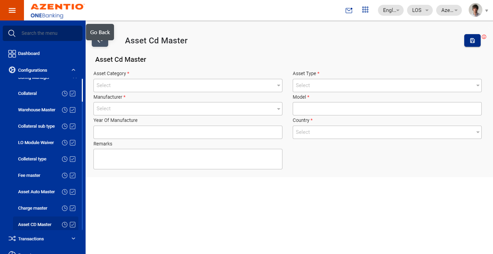And User verify the all mentioned fields in asset CD masterstepdefinitions.HooksClass.addScreenshot(io.cucumber.java.Scenario)screenshotThen User click the back button in asset CD masterstepdefinitions.HooksClass.addScreenshot(io.cucumber.java.Scenario)screenshot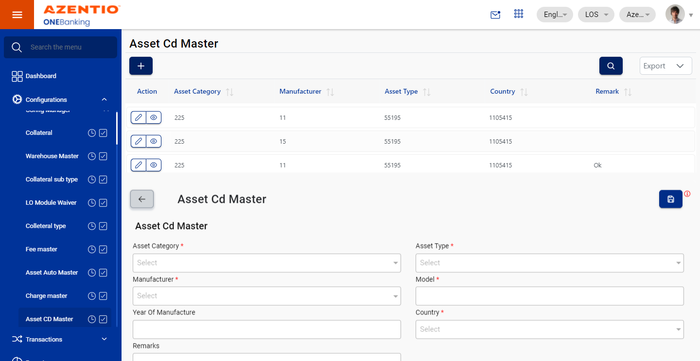And User click the add icon in asset CD masterstepdefinitions.HooksClass.addScreenshot(io.cucumber.java.Scenario)screenshot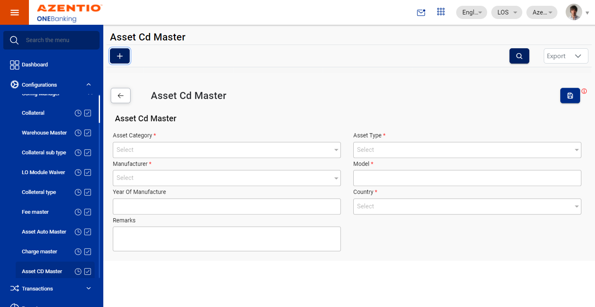Then User verify the asset category fields in asset CD masterstepdefinitions.HooksClass.addScreenshot(io.cucumber.java.Scenario)screenshot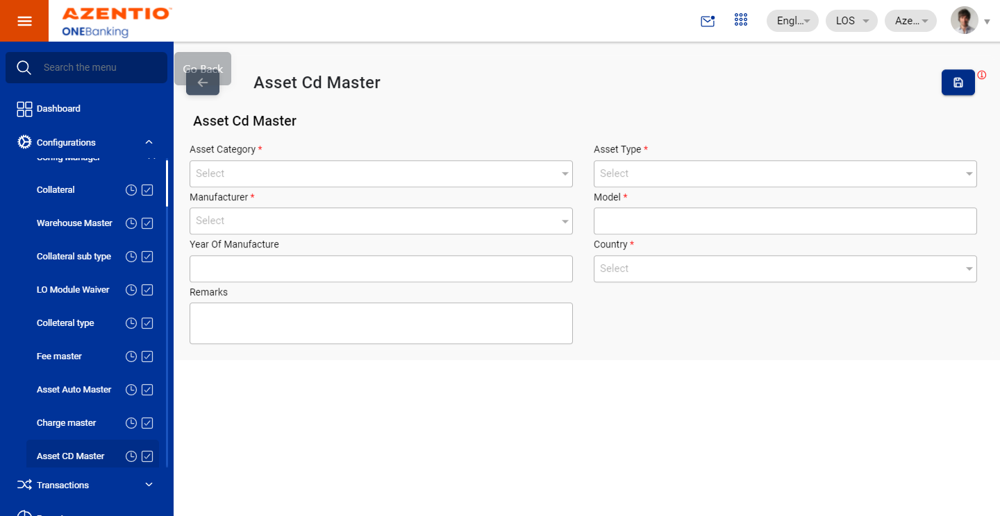And User enter the value in asset category for asset CD masterstepdefinitions.HooksClass.addScreenshot(io.cucumber.java.Scenario)screenshotAnd User enter the value in asset type for asset CD masterstepdefinitions.HooksClass.addScreenshot(io.cucumber.java.Scenario)screenshotAnd User enter the value in manufacturer for asset CD masterstepdefinitions.HooksClass.addScreenshot(io.cucumber.java.Scenario)screenshot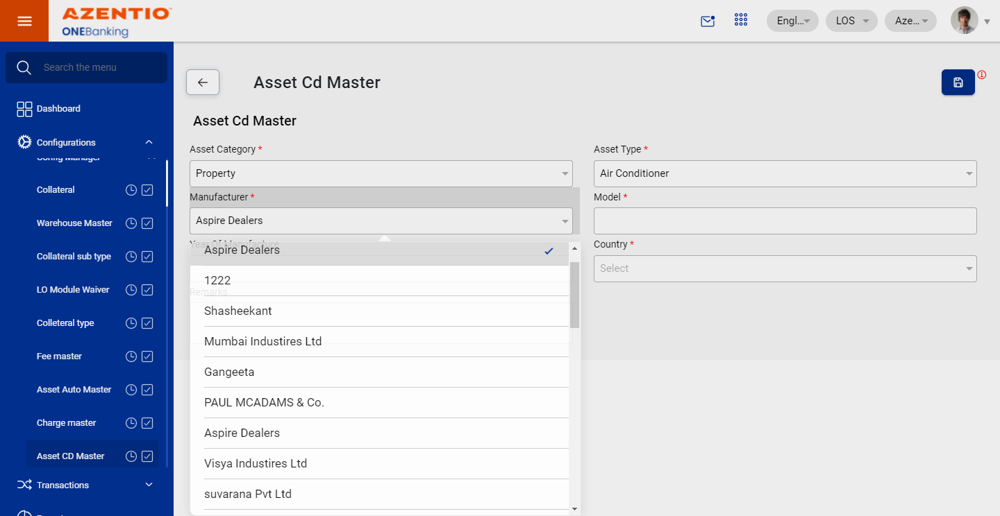And User enter the value in model for asset CD masterstepdefinitions.HooksClass.addScreenshot(io.cucumber.java.Scenario)screenshotAnd User enter the value in year of manufacture for asset CD masterstepdefinitions.HooksClass.addScreenshot(io.cucumber.java.Scenario)screenshotAnd User enter the value in country for asset CD masterstepdefinitions.HooksClass.addScreenshot(io.cucumber.java.Scenario)screenshotAnd User enter the value in remarks for asset CD masterstepdefinitions.HooksClass.addScreenshot(io.cucumber.java.Scenario)screenshotAnd User click the save button for asset CD masterstepdefinitions.HooksClass.addScreenshot(io.cucumber.java.Scenario)screenshot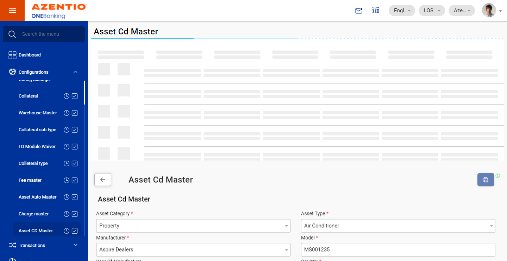Then User verify the confirmation message in asset CD masterstepdefinitions.HooksClass.addScreenshot(io.cucumber.java.Scenario)screenshot Then User click the inboxmail icon in asset CD masterstepdefinitions.HooksClass.addScreenshot(io.cucumber.java.Scenario)screenshotAnd User click the search icon in asset CD master and get the reference idstepdefinitions.HooksClass.addScreenshot(io.cucumber.java.Scenario)screenshot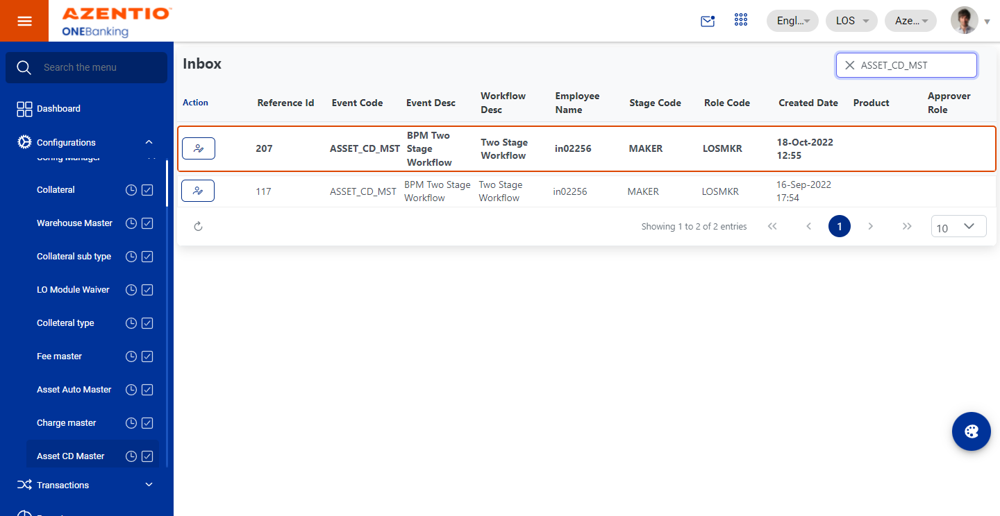And User click the submit icon in asset CD master makerstepdefinitions.HooksClass.addScreenshot(io.cucumber.java.Scenario)screenshot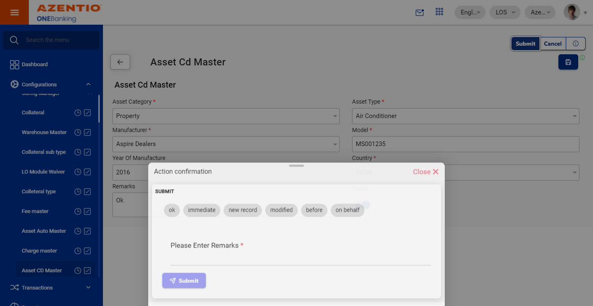And User enter the popup remark and submit the asset CD masterstepdefinitions.HooksClass.addScreenshot(io.cucumber.java.Scenario)screenshot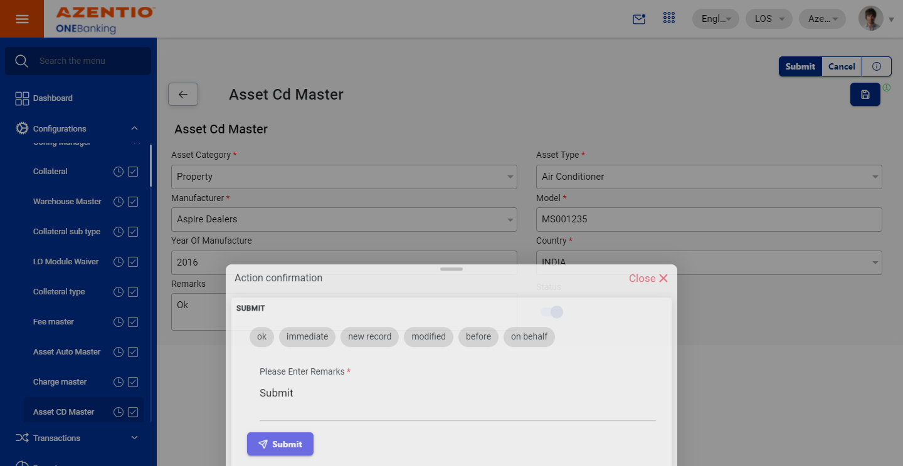And User get confirmation message and checker id in asset CD masterstepdefinitions.HooksClass.addScreenshot(io.cucumber.java.Scenario)screenshotPassTo verify user able to approve in checker stage for Asset-CD-MasterGiven User login as uls checker in asset CD masterstepdefinitions.HooksClass.addScreenshot(io.cucumber.java.Scenario)screenshotAnd User click the inboxicon in asset CD master checkerstepdefinitions.HooksClass.addScreenshot(io.cucumber.java.Scenario)screenshotAnd User click the search icon in asset CD master and get the reference idstepdefinitions.HooksClass.addScreenshot(io.cucumber.java.Scenario)screenshotAnd User search the respective reference id and click on Action button in asset CD masterstepdefinitions.HooksClass.addScreenshot(io.cucumber.java.Scenario)screenshotAnd User click on Approve icon in asset CD master checkerstepdefinitions.HooksClass.addScreenshot(io.cucumber.java.Scenario)screenshot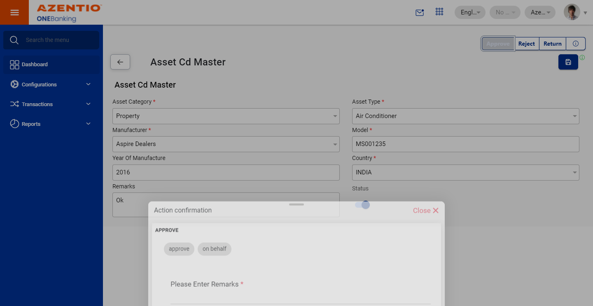And User click the popup remarks in asset CD master checkerstepdefinitions.HooksClass.addScreenshot(io.cucumber.java.Scenario)screenshot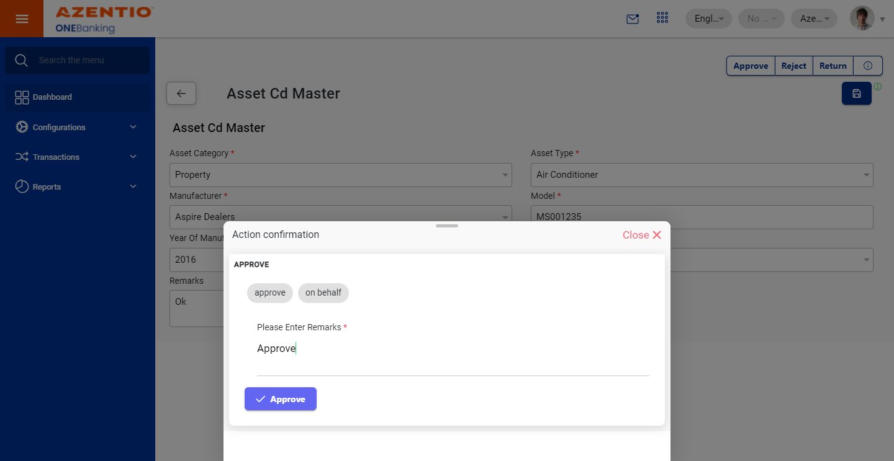Then User enter the popup remarks in asset CD master checkerstepdefinitions.HooksClass.addScreenshot(io.cucumber.java.Scenario)screenshotAnd User click the popup approve in asset CD master checkerstepdefinitions.HooksClass.addScreenshot(io.cucumber.java.Scenario)screenshotThen User verify the Record got Approved in asset CD checkerstepdefinitions.HooksClass.addScreenshot(io.cucumber.java.Scenario)screenshot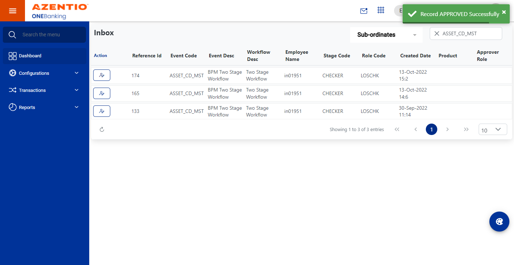FailTo verify user able to approve in checker stage and verify in maker stage for Asset-CD-MasterGiven User login as uls maker in asset CD masterstepdefinitions.HooksClass.addScreenshot(io.cucumber.java.Scenario)screenshotThen User click the Configurations in asset auto masterstepdefinitions.HooksClass.addScreenshot(io.cucumber.java.Scenario)screenshotAnd User click the config manager in Bounce masterstepdefinitions.HooksClass.addScreenshot(io.cucumber.java.Scenario)screenshotAnd Click the Asset CD Master setup eye icon in Asset CD masterstepdefinitions.HooksClass.addScreenshot(io.cucumber.java.Scenario)screenshotThen User validate the updated record in list view in Asset CD masterstepdefinitions.HooksClass.addScreenshot(io.cucumber.java.Scenario)screenshotPassTo verify the Asset CD Master all flowGiven User login as uls maker in asset CD masterstepdefinitions.HooksClass.addScreenshot(io.cucumber.java.Scenario)screenshotThen User click the Configurations in asset auto masterstepdefinitions.HooksClass.addScreenshot(io.cucumber.java.Scenario)screenshot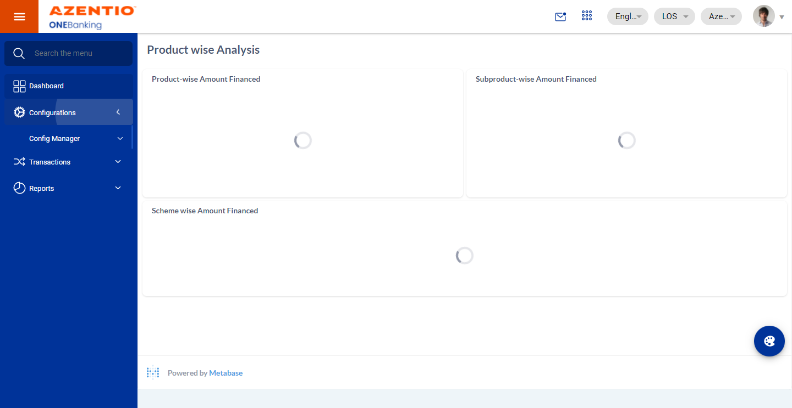And User click the config manager in Bounce masterstepdefinitions.HooksClass.addScreenshot(io.cucumber.java.Scenario)screenshot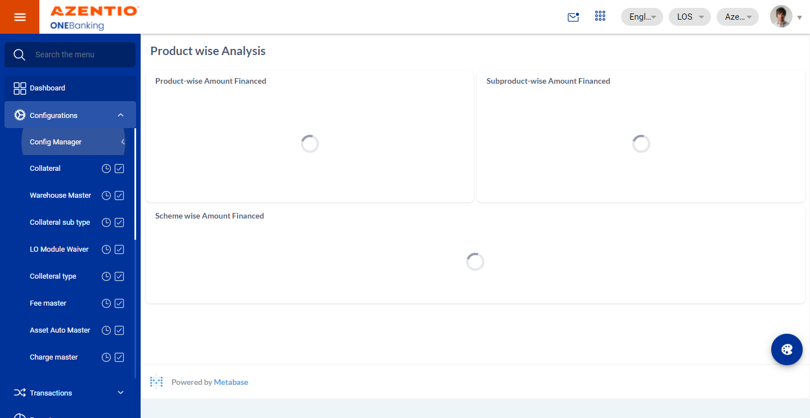And User click the edit icon in asset CD masterstepdefinitions.HooksClass.addScreenshot(io.cucumber.java.Scenario)screenshotAnd User click the add icon in asset CD masterstepdefinitions.HooksClass.addScreenshot(io.cucumber.java.Scenario)screenshot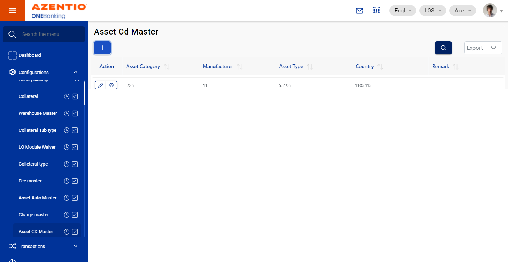And User enter the value in asset category for asset CD masterstepdefinitions.HooksClass.addScreenshot(io.cucumber.java.Scenario)screenshotAnd User enter the value in asset type for asset CD masterstepdefinitions.HooksClass.addScreenshot(io.cucumber.java.Scenario)screenshotAnd User enter the value in manufacturer for asset CD masterstepdefinitions.HooksClass.addScreenshot(io.cucumber.java.Scenario)screenshotAnd User enter the value in model for asset CD masterstepdefinitions.HooksClass.addScreenshot(io.cucumber.java.Scenario)screenshotAnd User enter the value in year of manufacture for asset CD masterstepdefinitions.HooksClass.addScreenshot(io.cucumber.java.Scenario)screenshotAnd User enter the value in country for asset CD masterstepdefinitions.HooksClass.addScreenshot(io.cucumber.java.Scenario)screenshotAnd User enter the value in remarks for asset CD masterstepdefinitions.HooksClass.addScreenshot(io.cucumber.java.Scenario)screenshot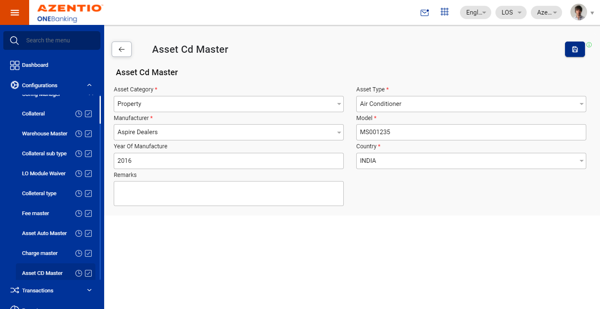And User click the save button for asset CD masterstepdefinitions.HooksClass.addScreenshot(io.cucumber.java.Scenario)screenshot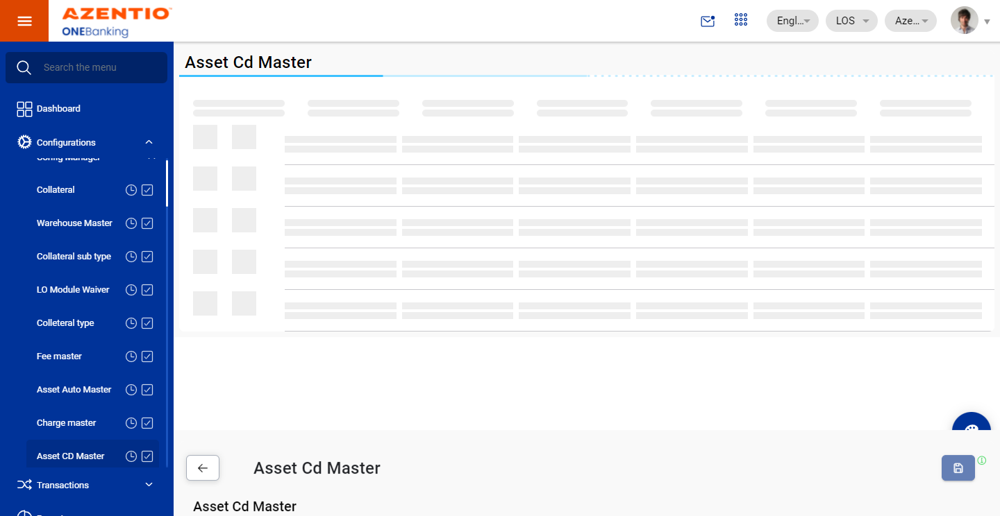Then User verify the confirmation message in asset CD masterstepdefinitions.HooksClass.addScreenshot(io.cucumber.java.Scenario)screenshot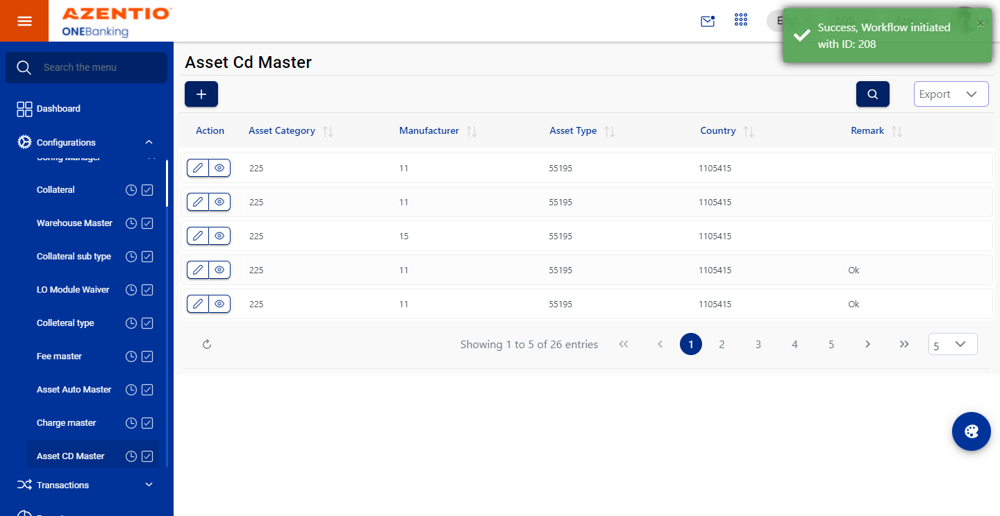Then User click the inboxmail icon in asset CD masterstepdefinitions.HooksClass.addScreenshot(io.cucumber.java.Scenario)screenshotAnd User click the search icon in asset CD master and get the reference idstepdefinitions.HooksClass.addScreenshot(io.cucumber.java.Scenario)screenshotAnd User click the submit icon in asset CD master makerstepdefinitions.HooksClass.addScreenshot(io.cucumber.java.Scenario)screenshot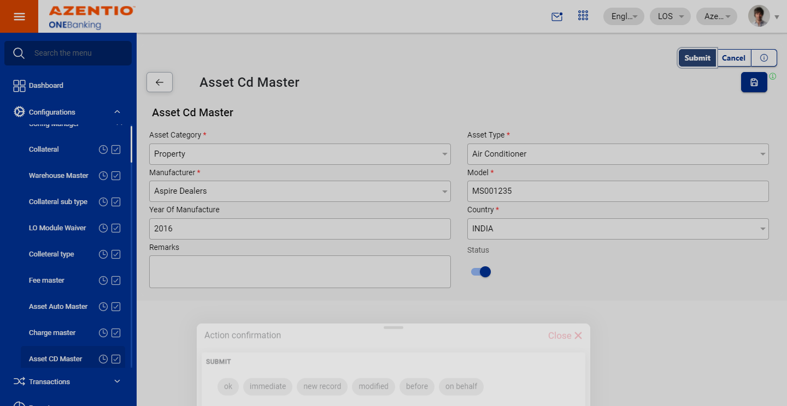And User enter the popup remark and submit the asset CD masterstepdefinitions.HooksClass.addScreenshot(io.cucumber.java.Scenario)screenshot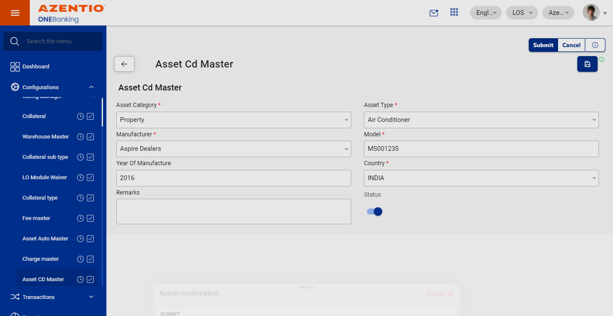And User get confirmation message and checker id in asset CD masterstepdefinitions.HooksClass.addScreenshot(io.cucumber.java.Scenario)screenshot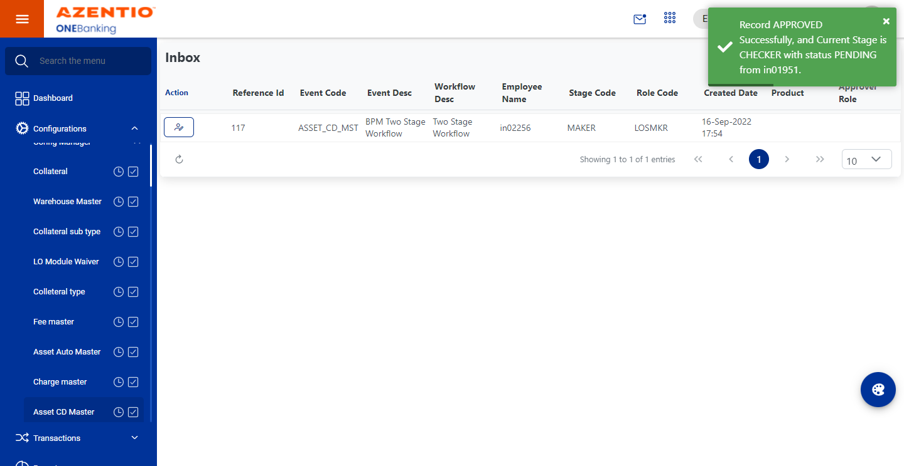PassTo verify the user able to reject the record in asset CD masterGiven User login as uls checker in asset CD masterstepdefinitions.HooksClass.addScreenshot(io.cucumber.java.Scenario)screenshotAnd User click the inboxicon in asset CD master checkerstepdefinitions.HooksClass.addScreenshot(io.cucumber.java.Scenario)screenshotAnd User click the search icon in asset CD master and get the reference idstepdefinitions.HooksClass.addScreenshot(io.cucumber.java.Scenario)screenshotAnd User search the respective reference id and click on Action button in asset CD masterstepdefinitions.HooksClass.addScreenshot(io.cucumber.java.Scenario)screenshotAnd User click the reject icon in asset CD master checkerstepdefinitions.HooksClass.addScreenshot(io.cucumber.java.Scenario)screenshot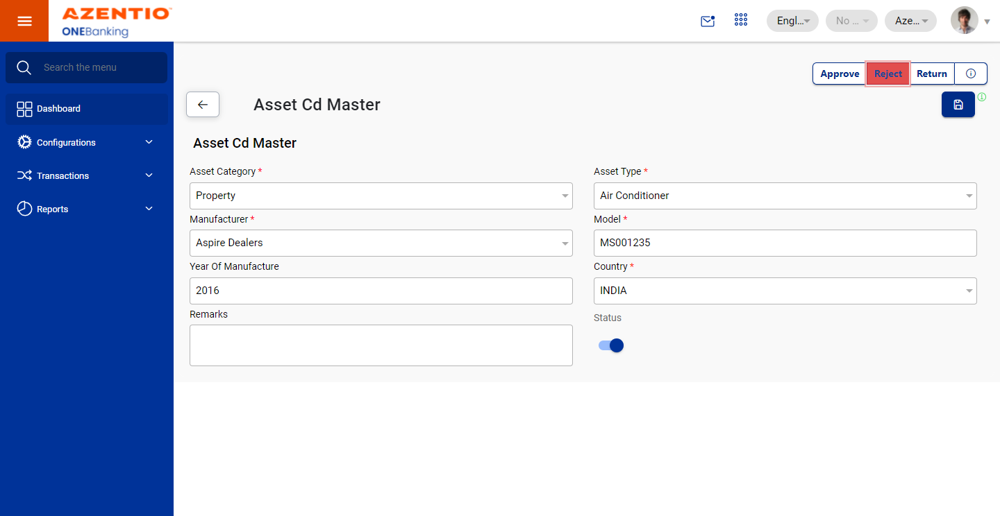And User enter the reject remark in asset CD master checkerstepdefinitions.HooksClass.addScreenshot(io.cucumber.java.Scenario)screenshot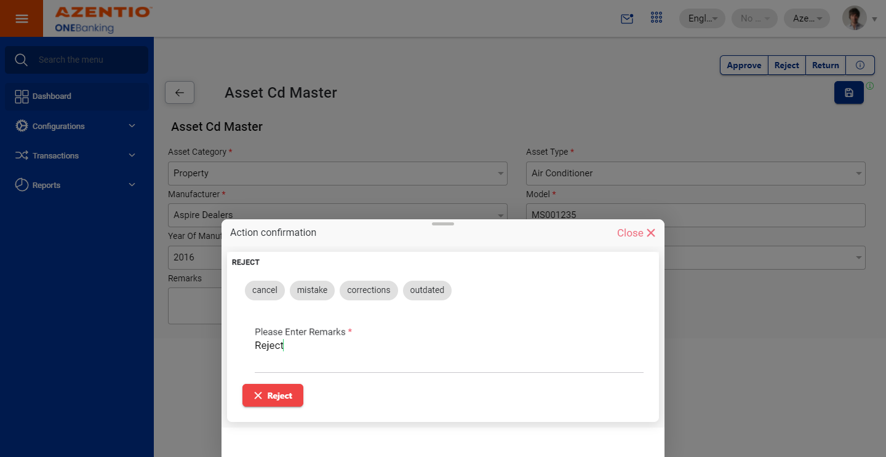And User click the final reject icon in asset CD master checkerstepdefinitions.HooksClass.addScreenshot(io.cucumber.java.Scenario)screenshot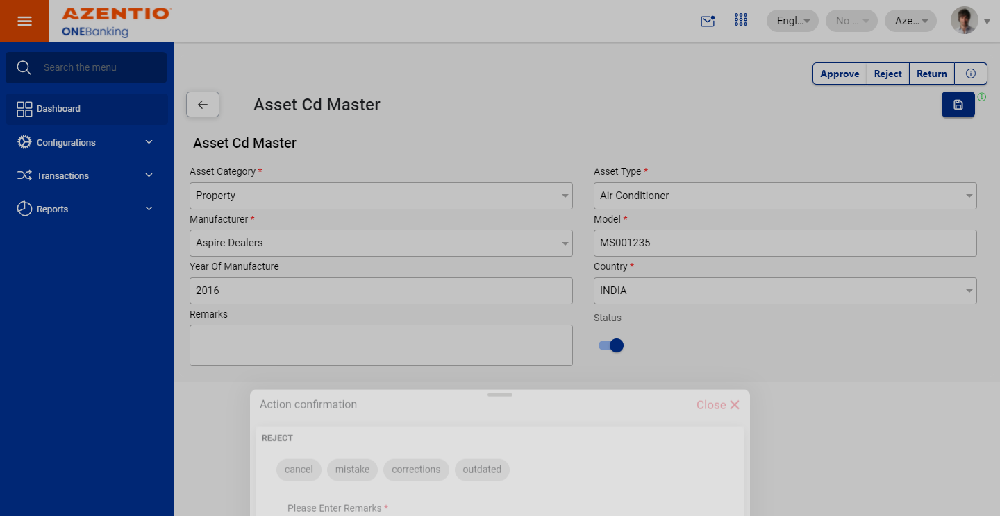Then User verify the Record got Rejected in asset CD checkerstepdefinitions.HooksClass.addScreenshot(io.cucumber.java.Scenario)screenshotPassTo verify the rejected record shown in asset CD master maker stageGiven User login as uls maker in asset CD masterstepdefinitions.HooksClass.addScreenshot(io.cucumber.java.Scenario)screenshotThen User click the Configurations in asset auto masterstepdefinitions.HooksClass.addScreenshot(io.cucumber.java.Scenario)screenshotAnd User click the config manager in Bounce masterstepdefinitions.HooksClass.addScreenshot(io.cucumber.java.Scenario)screenshotAnd Click the Asset CD Master setup eye icon in Asset CD masterstepdefinitions.HooksClass.addScreenshot(io.cucumber.java.Scenario)screenshot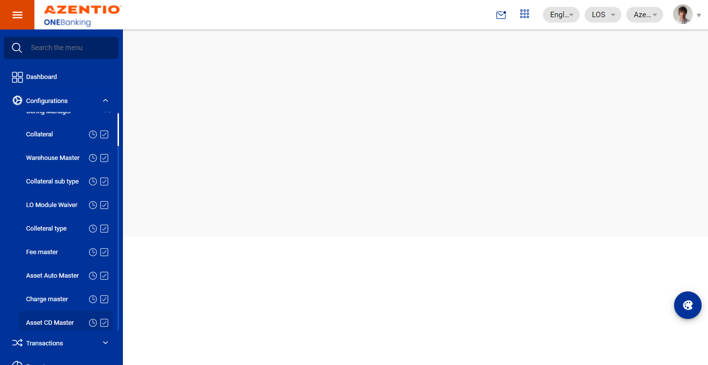Then User click the inboxmail icon in asset CD masterstepdefinitions.HooksClass.addScreenshot(io.cucumber.java.Scenario)screenshotAnd User verify the rejected record removed from the system in asset CD masterstepdefinitions.HooksClass.addScreenshot(io.cucumber.java.Scenario)screenshot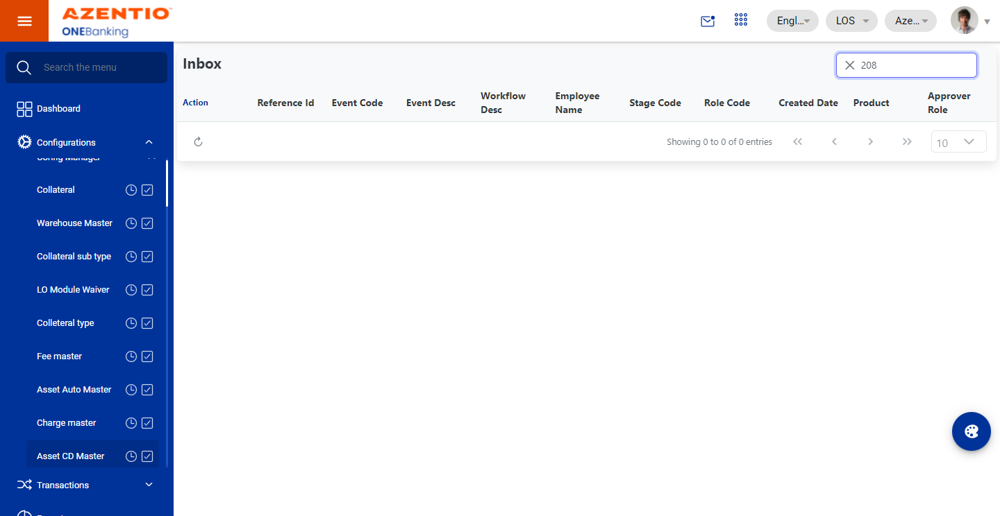PassTo verify the Asset CD Master all flowGiven User login as uls maker in asset CD masterstepdefinitions.HooksClass.addScreenshot(io.cucumber.java.Scenario)screenshotThen User click the Configurations in asset auto masterstepdefinitions.HooksClass.addScreenshot(io.cucumber.java.Scenario)screenshotAnd User click the config manager in Bounce masterstepdefinitions.HooksClass.addScreenshot(io.cucumber.java.Scenario)screenshotAnd User click the edit icon in asset CD masterstepdefinitions.HooksClass.addScreenshot(io.cucumber.java.Scenario)screenshotAnd User click the add icon in asset CD masterstepdefinitions.HooksClass.addScreenshot(io.cucumber.java.Scenario)screenshotAnd User enter the value in asset category for asset CD masterstepdefinitions.HooksClass.addScreenshot(io.cucumber.java.Scenario)screenshotAnd User enter the value in asset type for asset CD masterstepdefinitions.HooksClass.addScreenshot(io.cucumber.java.Scenario)screenshotAnd User enter the value in manufacturer for asset CD masterstepdefinitions.HooksClass.addScreenshot(io.cucumber.java.Scenario)screenshot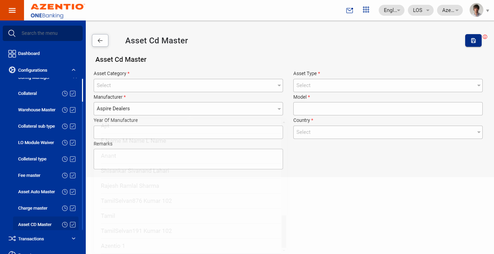And User enter the value in model for asset CD masterstepdefinitions.HooksClass.addScreenshot(io.cucumber.java.Scenario)screenshotAnd User enter the value in year of manufacture for asset CD masterstepdefinitions.HooksClass.addScreenshot(io.cucumber.java.Scenario)screenshotAnd User enter the value in country for asset CD masterstepdefinitions.HooksClass.addScreenshot(io.cucumber.java.Scenario)screenshot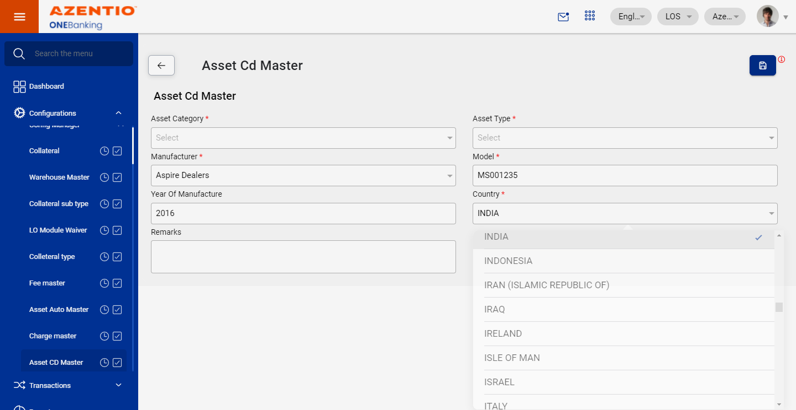And User enter the value in remarks for asset CD masterstepdefinitions.HooksClass.addScreenshot(io.cucumber.java.Scenario)screenshotAnd User click the save button for asset CD masterstepdefinitions.HooksClass.addScreenshot(io.cucumber.java.Scenario)screenshot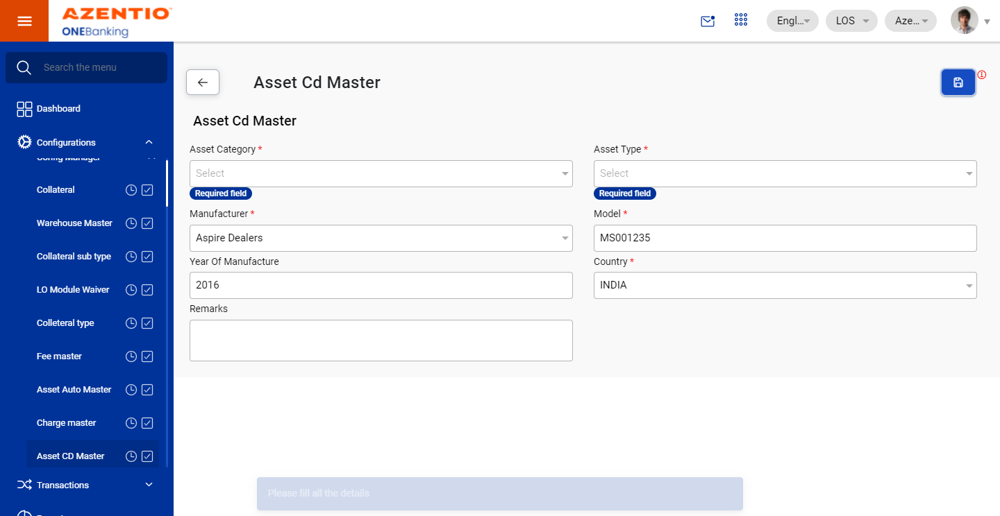Then User verify the confirmation message in asset CD masterstepdefinitions.HooksClass.addScreenshot(io.cucumber.java.Scenario)screenshot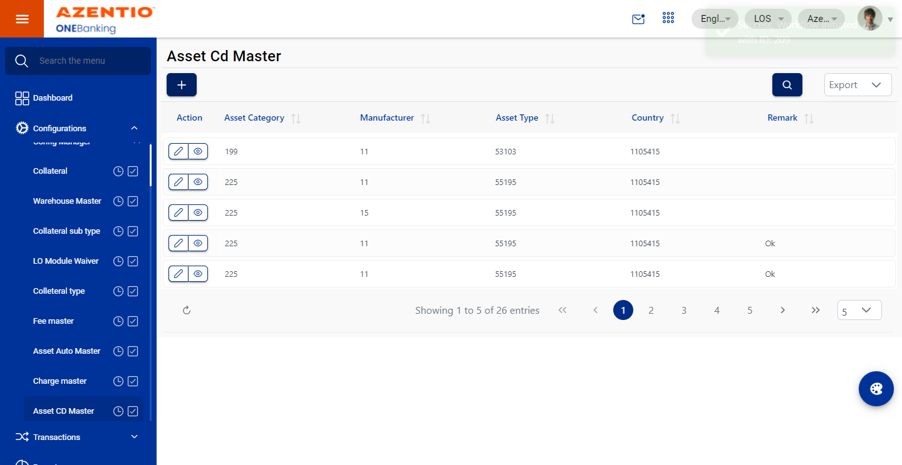Then User click the inboxmail icon in asset CD masterstepdefinitions.HooksClass.addScreenshot(io.cucumber.java.Scenario)screenshotAnd User click the search icon in asset CD master and get the reference idstepdefinitions.HooksClass.addScreenshot(io.cucumber.java.Scenario)screenshot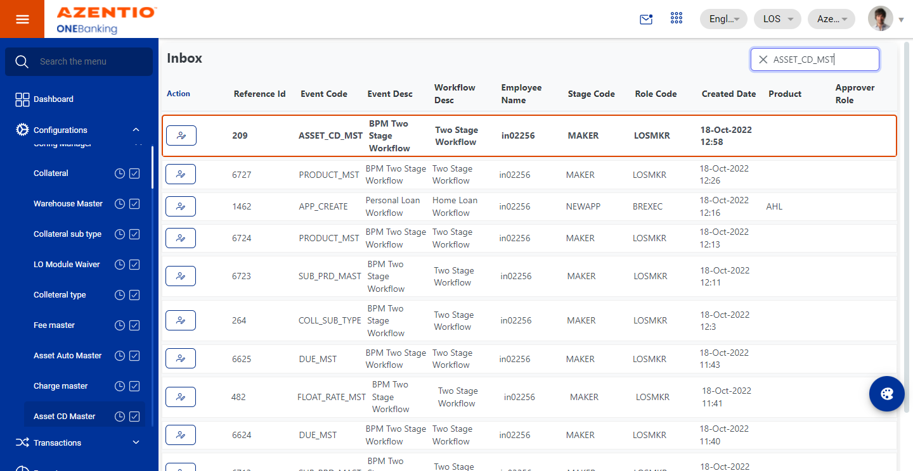And User click the submit icon in asset CD master makerstepdefinitions.HooksClass.addScreenshot(io.cucumber.java.Scenario)screenshot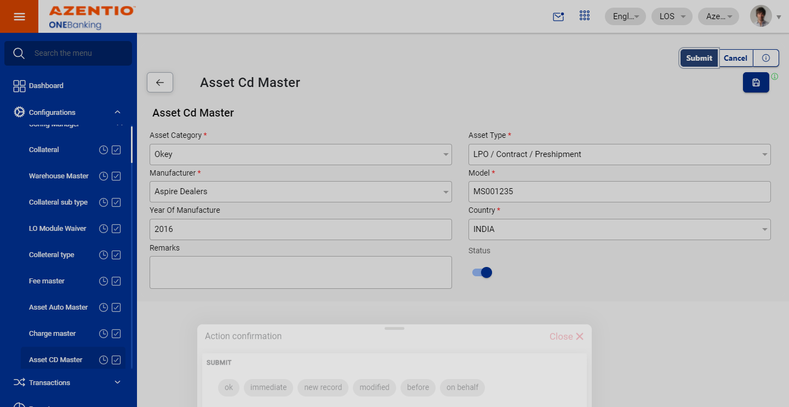And User enter the popup remark and submit the asset CD masterstepdefinitions.HooksClass.addScreenshot(io.cucumber.java.Scenario)screenshot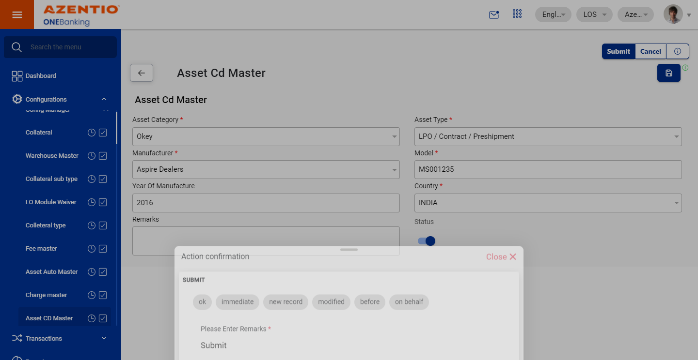And User get confirmation message and checker id in asset CD masterstepdefinitions.HooksClass.addScreenshot(io.cucumber.java.Scenario)screenshotFailTo verify the user able to reject the record in asset CD masterGiven User login as uls checker in asset CD masterstepdefinitions.HooksClass.addScreenshot(io.cucumber.java.Scenario)screenshotAnd User click the inboxicon in asset CD master checkerstepdefinitions.HooksClass.addScreenshot(io.cucumber.java.Scenario)screenshotAnd User click the search icon in asset CD master and get the reference idstepdefinitions.HooksClass.addScreenshot(io.cucumber.java.Scenario)screenshotAnd User search the respective reference id and click on Action button in asset CD masterstepdefinitions.HooksClass.addScreenshot(io.cucumber.java.Scenario)screenshotAnd User click the return icon in asset CD master checkerstepdefinitions.HooksClass.addScreenshot(io.cucumber.java.Scenario)screenshotAnd User enter the return remark in asset CD master checkerstepdefinitions.HooksClass.addScreenshot(io.cucumber.java.Scenario)screenshot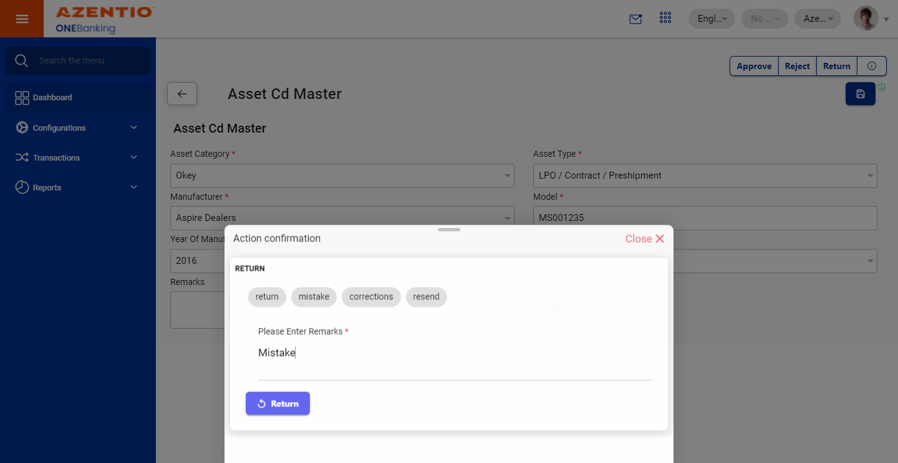And User click the final return icon in asset CD master checkerstepdefinitions.HooksClass.addScreenshot(io.cucumber.java.Scenario)screenshot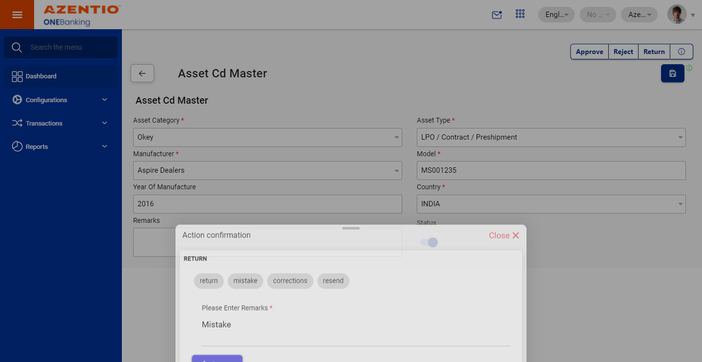Then User verify the Record got Returned in asset CD checkerstepdefinitions.HooksClass.addScreenshot(io.cucumber.java.Scenario)screenshot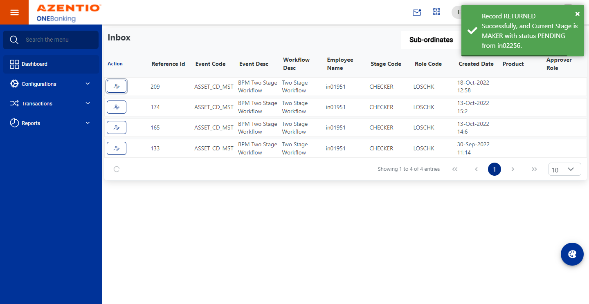PassTo verify the rejected record shown in asset CD master maker stageGiven User login as uls maker in asset CD masterstepdefinitions.HooksClass.addScreenshot(io.cucumber.java.Scenario)screenshot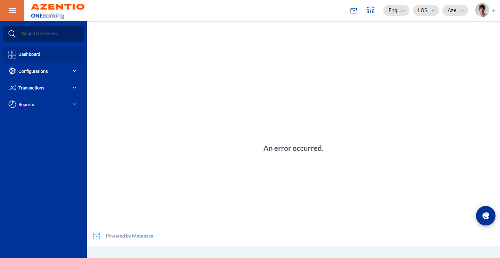Then User click the Configurations in asset auto masterstepdefinitions.HooksClass.addScreenshot(io.cucumber.java.Scenario)screenshot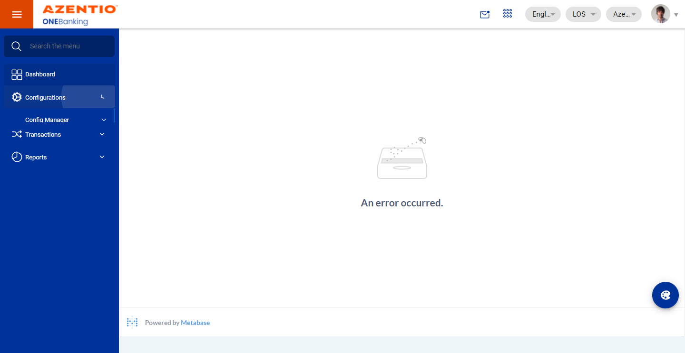And User click the config manager in Bounce masterstepdefinitions.HooksClass.addScreenshot(io.cucumber.java.Scenario)screenshot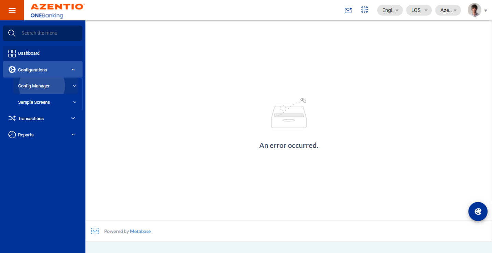And Click the Asset CD Master setup eye icon in Asset CD masterstepdefinitions.HooksClass.addScreenshot(io.cucumber.java.Scenario)screenshot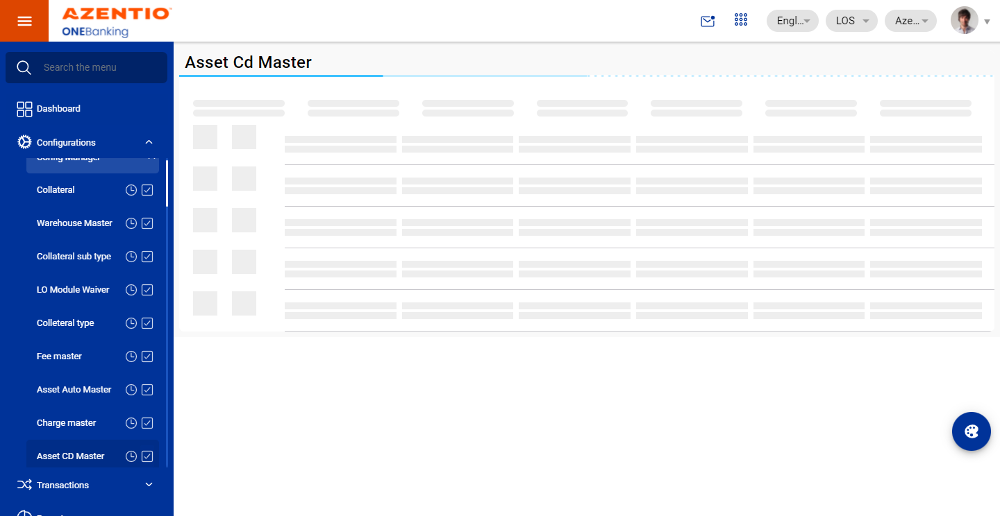Then User click the inboxmail icon in asset CD masterstepdefinitions.HooksClass.addScreenshot(io.cucumber.java.Scenario)screenshotAnd User verify the returned record removed from the system in asset CD masterstepdefinitions.HooksClass.addScreenshot(io.cucumber.java.Scenario)screenshot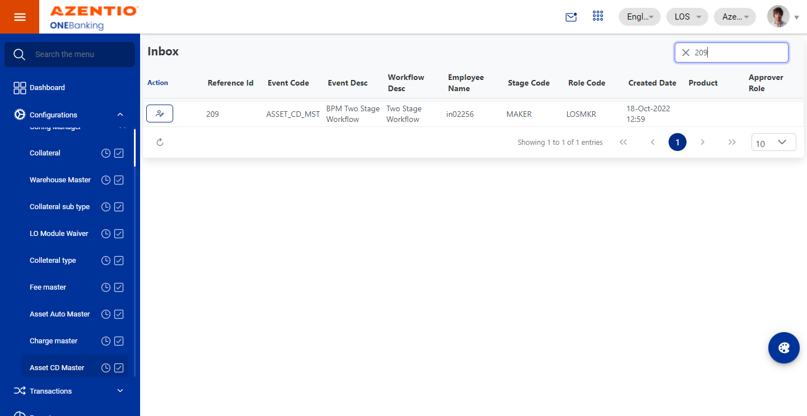PassTo verify the impact when user keep any mandatory field blank and click on save buttonGiven User login as uls maker in asset CD masterstepdefinitions.HooksClass.addScreenshot(io.cucumber.java.Scenario)screenshotThen User click the Configurations in asset auto masterstepdefinitions.HooksClass.addScreenshot(io.cucumber.java.Scenario)screenshotAnd User click the config manager in Bounce masterstepdefinitions.HooksClass.addScreenshot(io.cucumber.java.Scenario)screenshotAnd User click the edit icon in asset CD masterstepdefinitions.HooksClass.addScreenshot(io.cucumber.java.Scenario)screenshotAnd User click the add icon in asset CD masterstepdefinitions.HooksClass.addScreenshot(io.cucumber.java.Scenario)screenshot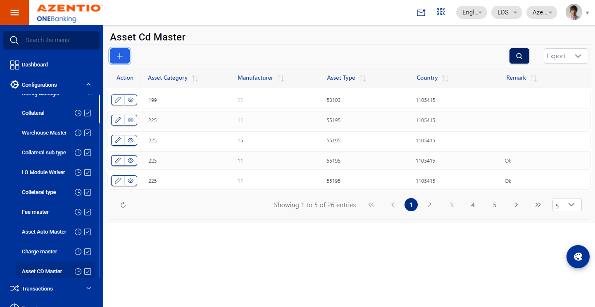And Verify the impact when user enter characters value in numeric field in asset CD masterstepdefinitions.HooksClass.addScreenshot(io.cucumber.java.Scenario)screenshotAnd Verify the impact when user enter numeric value in character field in asset CD masterstepdefinitions.HooksClass.addScreenshot(io.cucumber.java.Scenario)screenshotAnd User click the save button for asset CD masterstepdefinitions.HooksClass.addScreenshot(io.cucumber.java.Scenario)screenshot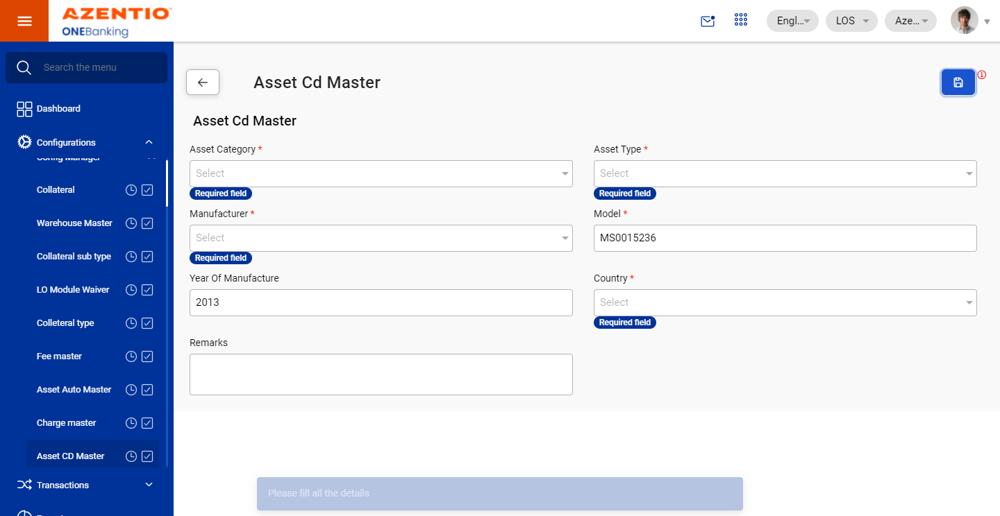And Verify the impact when user keep any mandatory field blank in asset CD masterstepdefinitions.HooksClass.addScreenshot(io.cucumber.java.Scenario)screenshot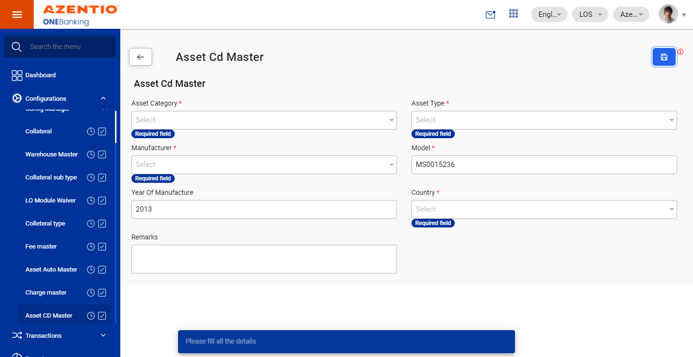PassTo verify the Asset CD Master all flowGiven User login as uls maker in asset CD masterstepdefinitions.HooksClass.addScreenshot(io.cucumber.java.Scenario)screenshot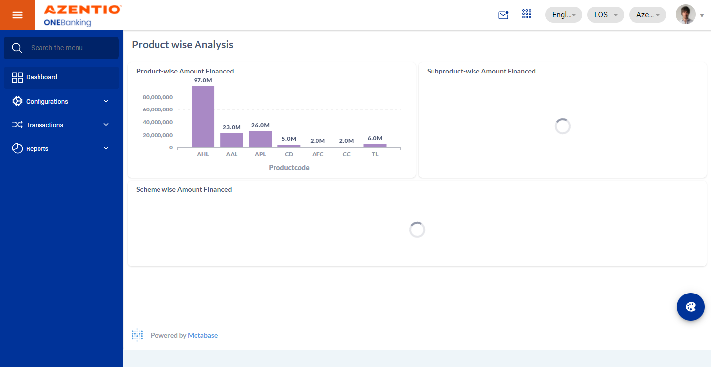Then User click the Configurations in asset auto masterstepdefinitions.HooksClass.addScreenshot(io.cucumber.java.Scenario)screenshotAnd User click the config manager in Bounce masterstepdefinitions.HooksClass.addScreenshot(io.cucumber.java.Scenario)screenshot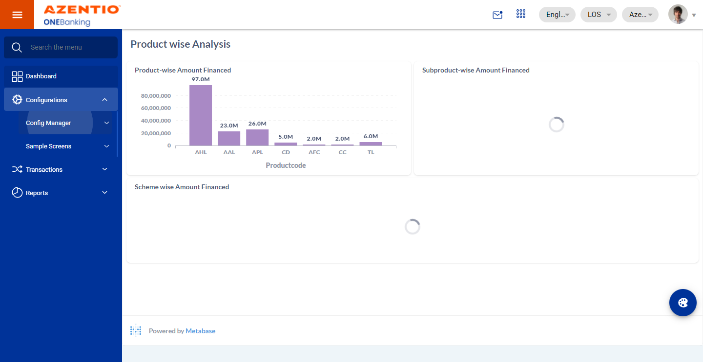And User click the edit icon in asset CD masterstepdefinitions.HooksClass.addScreenshot(io.cucumber.java.Scenario)screenshotAnd User click the add icon in asset CD masterstepdefinitions.HooksClass.addScreenshot(io.cucumber.java.Scenario)screenshotAnd User enter the value in asset category for asset CD masterstepdefinitions.HooksClass.addScreenshot(io.cucumber.java.Scenario)screenshotAnd User enter the value in asset type for asset CD masterstepdefinitions.HooksClass.addScreenshot(io.cucumber.java.Scenario)screenshot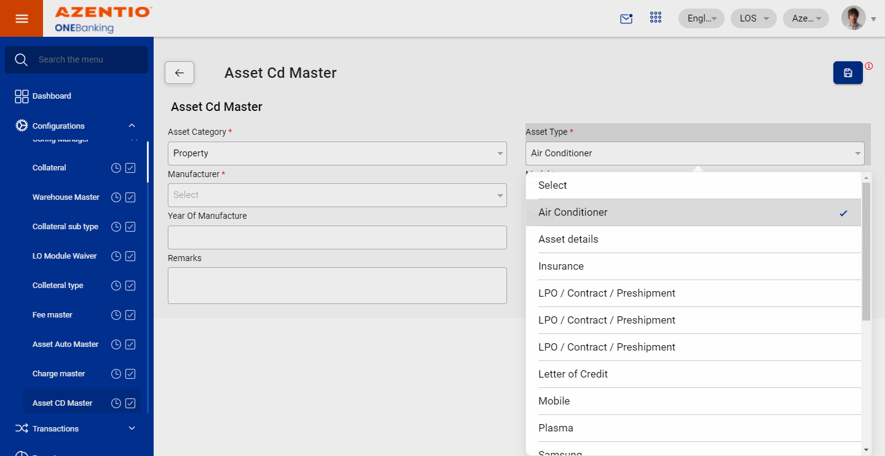And User enter the value in manufacturer for asset CD masterstepdefinitions.HooksClass.addScreenshot(io.cucumber.java.Scenario)screenshotAnd User enter the value in model for asset CD masterstepdefinitions.HooksClass.addScreenshot(io.cucumber.java.Scenario)screenshotAnd User enter the value in year of manufacture for asset CD masterstepdefinitions.HooksClass.addScreenshot(io.cucumber.java.Scenario)screenshotAnd User enter the value in country for asset CD masterstepdefinitions.HooksClass.addScreenshot(io.cucumber.java.Scenario)screenshotAnd User enter the value in remarks for asset CD masterstepdefinitions.HooksClass.addScreenshot(io.cucumber.java.Scenario)screenshotAnd User click the save button for asset CD masterstepdefinitions.HooksClass.addScreenshot(io.cucumber.java.Scenario)screenshotThen User verify the confirmation message in asset CD masterstepdefinitions.HooksClass.addScreenshot(io.cucumber.java.Scenario)screenshotThen User click the inboxmail icon in asset CD masterstepdefinitions.HooksClass.addScreenshot(io.cucumber.java.Scenario)screenshotAnd User click the search icon in asset CD master and get the reference idstepdefinitions.HooksClass.addScreenshot(io.cucumber.java.Scenario)screenshotAnd User click the submit icon in asset CD master makerstepdefinitions.HooksClass.addScreenshot(io.cucumber.java.Scenario)screenshotAnd User enter the popup remark and submit the asset CD masterstepdefinitions.HooksClass.addScreenshot(io.cucumber.java.Scenario)screenshot
Then User click the inboxmail icon in asset CD masterstepdefinitions.HooksClass.addScreenshot(io.cucumber.java.Scenario)screenshotAnd User click the search icon in asset CD master and get the reference idstepdefinitions.HooksClass.addScreenshot(io.cucumber.java.Scenario)screenshot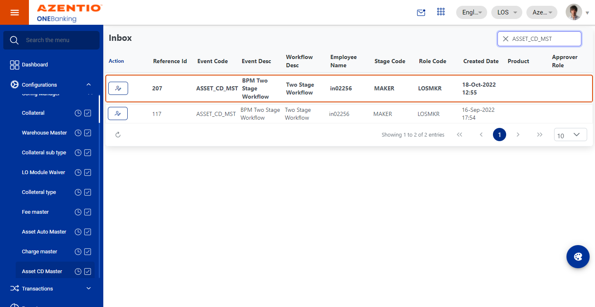And User click the submit icon in asset CD master makerstepdefinitions.HooksClass.addScreenshot(io.cucumber.java.Scenario)screenshot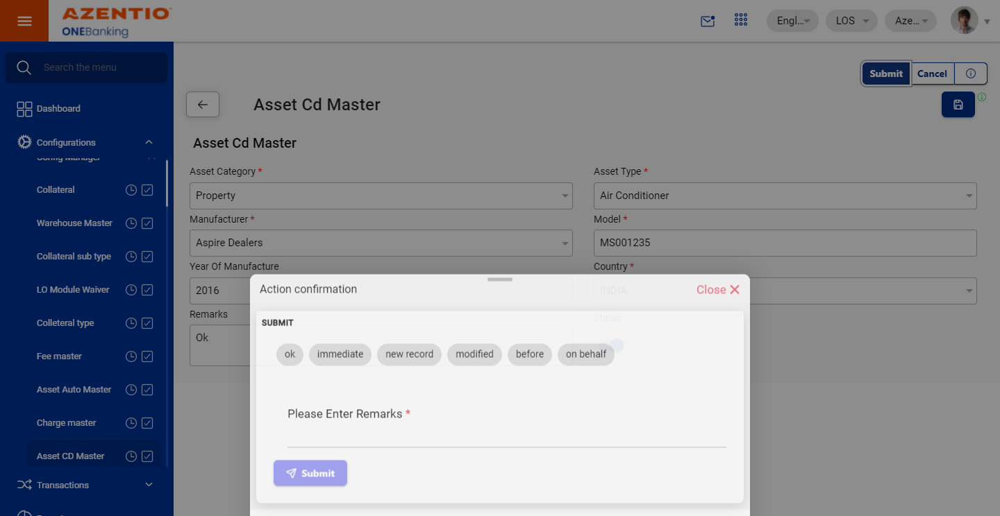And User enter the popup remark and submit the asset CD masterstepdefinitions.HooksClass.addScreenshot(io.cucumber.java.Scenario)screenshot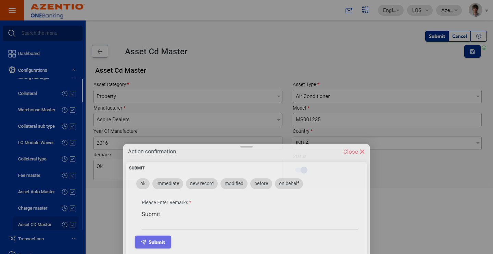And User get confirmation message and checker id in asset CD masterstepdefinitions.HooksClass.addScreenshot(io.cucumber.java.Scenario)screenshotPassTo verify user able to approve in checker stage for Asset-CD-MasterGiven User login as uls checker in asset CD masterstepdefinitions.HooksClass.addScreenshot(io.cucumber.java.Scenario)screenshotAnd User click the inboxicon in asset CD master checkerstepdefinitions.HooksClass.addScreenshot(io.cucumber.java.Scenario)screenshotAnd User click the search icon in asset CD master and get the reference idstepdefinitions.HooksClass.addScreenshot(io.cucumber.java.Scenario)screenshotAnd User search the respective reference id and click on Action button in asset CD masterstepdefinitions.HooksClass.addScreenshot(io.cucumber.java.Scenario)screenshotAnd User click on Approve icon in asset CD master checkerstepdefinitions.HooksClass.addScreenshot(io.cucumber.java.Scenario)screenshot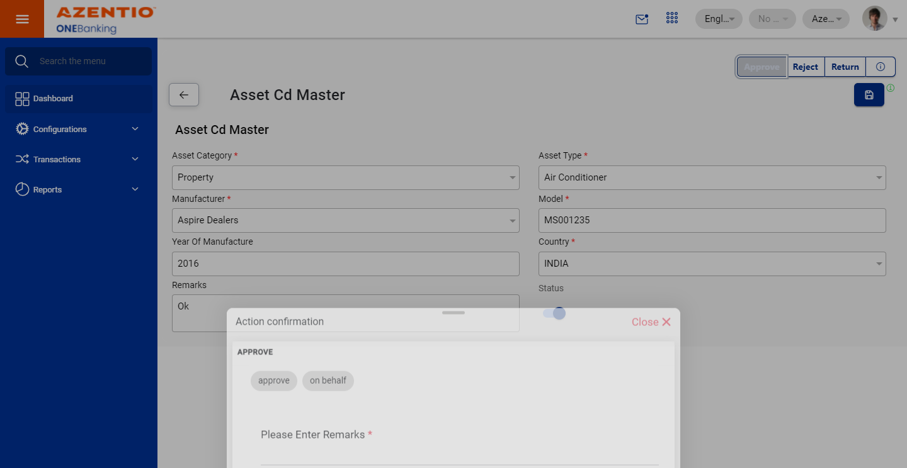And User click the popup remarks in asset CD master checkerstepdefinitions.HooksClass.addScreenshot(io.cucumber.java.Scenario)screenshot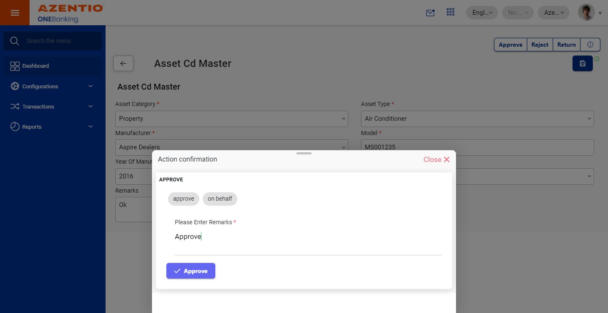Then User enter the popup remarks in asset CD master checkerstepdefinitions.HooksClass.addScreenshot(io.cucumber.java.Scenario)screenshotAnd User click the popup approve in asset CD master checkerstepdefinitions.HooksClass.addScreenshot(io.cucumber.java.Scenario)screenshotThen User verify the Record got Approved in asset CD checkerstepdefinitions.HooksClass.addScreenshot(io.cucumber.java.Scenario)screenshot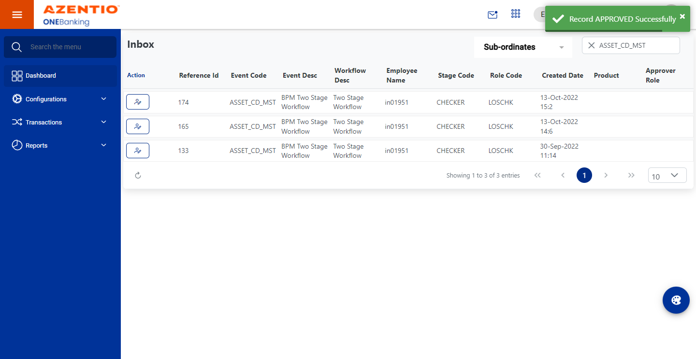FailTo verify user able to approve in checker stage and verify in maker stage for Asset-CD-MasterGiven User login as uls maker in asset CD masterstepdefinitions.HooksClass.addScreenshot(io.cucumber.java.Scenario)screenshotThen User click the Configurations in asset auto masterstepdefinitions.HooksClass.addScreenshot(io.cucumber.java.Scenario)screenshotAnd User click the config manager in Bounce masterstepdefinitions.HooksClass.addScreenshot(io.cucumber.java.Scenario)screenshotAnd Click the Asset CD Master setup eye icon in Asset CD masterstepdefinitions.HooksClass.addScreenshot(io.cucumber.java.Scenario)screenshotThen User validate the updated record in list view in Asset CD masterstepdefinitions.HooksClass.addScreenshot(io.cucumber.java.Scenario)screenshotPassTo verify the Asset CD Master all flowGiven User login as uls maker in asset CD masterstepdefinitions.HooksClass.addScreenshot(io.cucumber.java.Scenario)screenshotThen User click the Configurations in asset auto masterstepdefinitions.HooksClass.addScreenshot(io.cucumber.java.Scenario)screenshot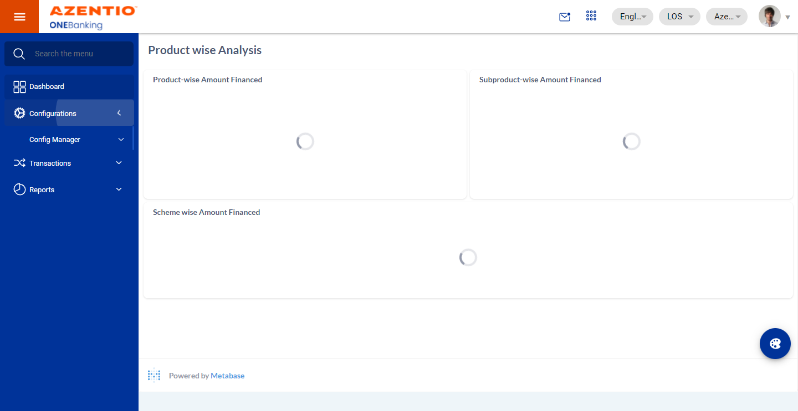And User click the config manager in Bounce masterstepdefinitions.HooksClass.addScreenshot(io.cucumber.java.Scenario)screenshot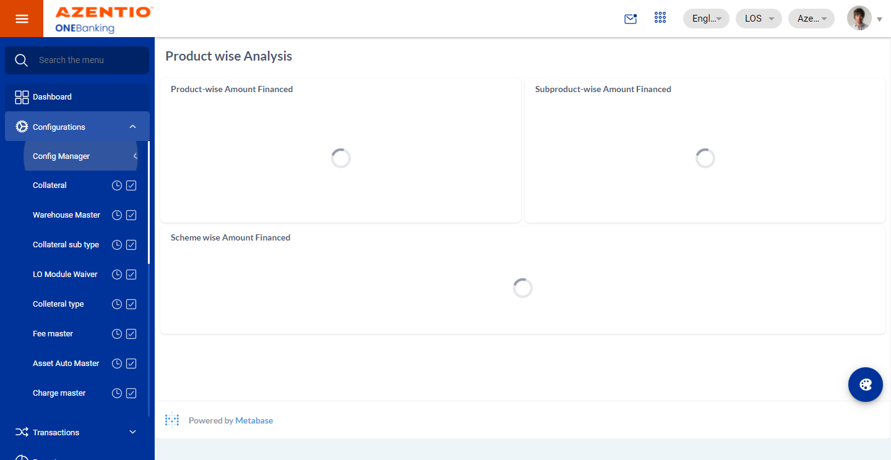And User click the edit icon in asset CD masterstepdefinitions.HooksClass.addScreenshot(io.cucumber.java.Scenario)screenshotAnd User click the add icon in asset CD masterstepdefinitions.HooksClass.addScreenshot(io.cucumber.java.Scenario)screenshot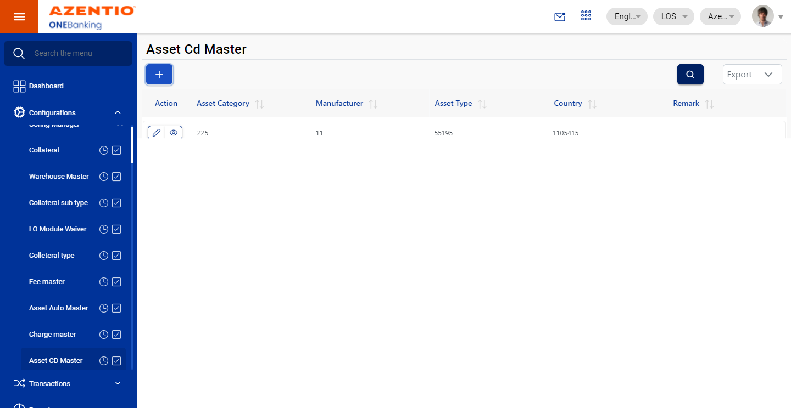And User enter the value in asset category for asset CD masterstepdefinitions.HooksClass.addScreenshot(io.cucumber.java.Scenario)screenshotAnd User enter the value in asset type for asset CD masterstepdefinitions.HooksClass.addScreenshot(io.cucumber.java.Scenario)screenshotAnd User enter the value in manufacturer for asset CD masterstepdefinitions.HooksClass.addScreenshot(io.cucumber.java.Scenario)screenshotAnd User enter the value in model for asset CD masterstepdefinitions.HooksClass.addScreenshot(io.cucumber.java.Scenario)screenshotAnd User enter the value in year of manufacture for asset CD masterstepdefinitions.HooksClass.addScreenshot(io.cucumber.java.Scenario)screenshotAnd User enter the value in country for asset CD masterstepdefinitions.HooksClass.addScreenshot(io.cucumber.java.Scenario)screenshotAnd User enter the value in remarks for asset CD masterstepdefinitions.HooksClass.addScreenshot(io.cucumber.java.Scenario)screenshot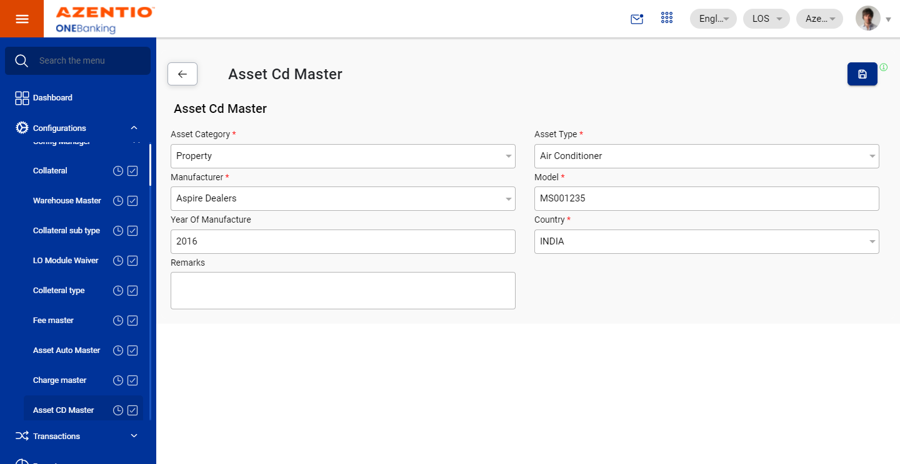And User click the save button for asset CD masterstepdefinitions.HooksClass.addScreenshot(io.cucumber.java.Scenario)screenshot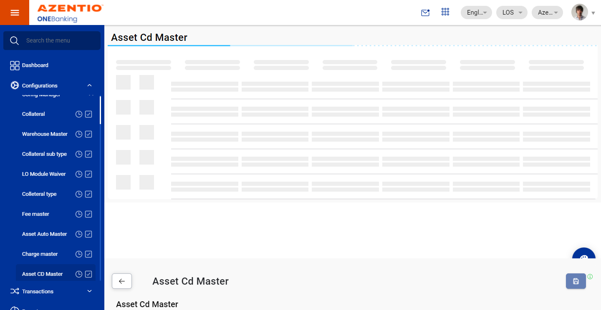Then User verify the confirmation message in asset CD masterstepdefinitions.HooksClass.addScreenshot(io.cucumber.java.Scenario)screenshot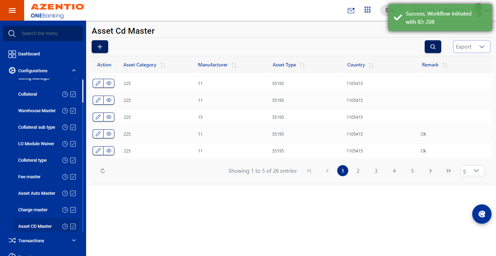Then User click the inboxmail icon in asset CD masterstepdefinitions.HooksClass.addScreenshot(io.cucumber.java.Scenario)screenshotAnd User click the search icon in asset CD master and get the reference idstepdefinitions.HooksClass.addScreenshot(io.cucumber.java.Scenario)screenshotAnd User click the submit icon in asset CD master makerstepdefinitions.HooksClass.addScreenshot(io.cucumber.java.Scenario)screenshot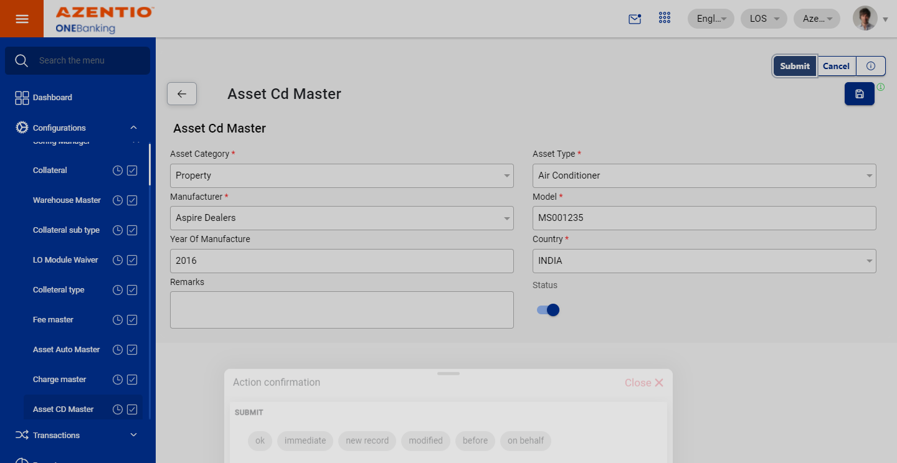And User enter the popup remark and submit the asset CD masterstepdefinitions.HooksClass.addScreenshot(io.cucumber.java.Scenario)screenshot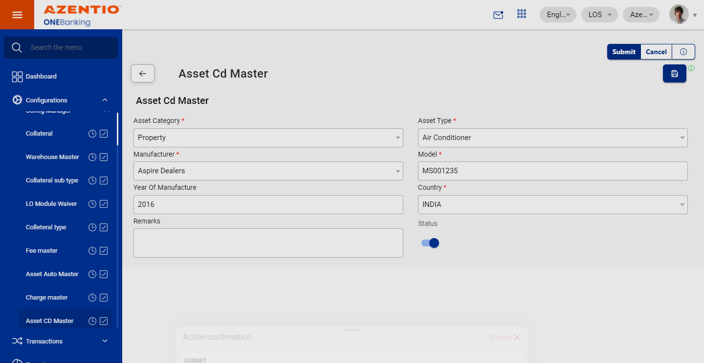And User get confirmation message and checker id in asset CD masterstepdefinitions.HooksClass.addScreenshot(io.cucumber.java.Scenario)screenshot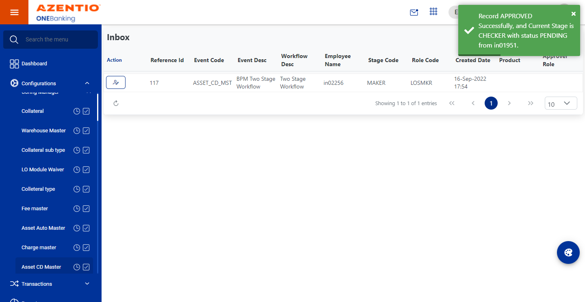PassTo verify the user able to reject the record in asset CD masterGiven User login as uls checker in asset CD masterstepdefinitions.HooksClass.addScreenshot(io.cucumber.java.Scenario)screenshotAnd User click the inboxicon in asset CD master checkerstepdefinitions.HooksClass.addScreenshot(io.cucumber.java.Scenario)screenshotAnd User click the search icon in asset CD master and get the reference idstepdefinitions.HooksClass.addScreenshot(io.cucumber.java.Scenario)screenshotAnd User search the respective reference id and click on Action button in asset CD masterstepdefinitions.HooksClass.addScreenshot(io.cucumber.java.Scenario)screenshotAnd User click the reject icon in asset CD master checkerstepdefinitions.HooksClass.addScreenshot(io.cucumber.java.Scenario)screenshot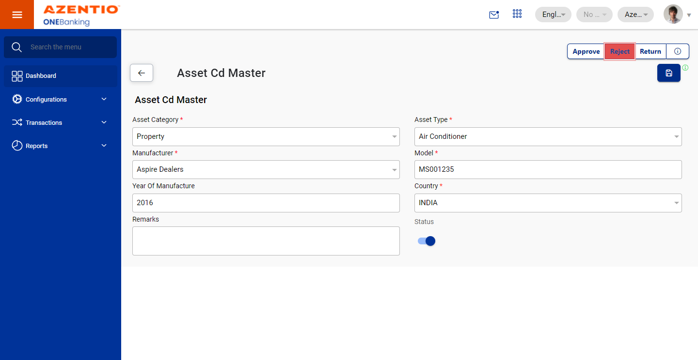And User enter the reject remark in asset CD master checkerstepdefinitions.HooksClass.addScreenshot(io.cucumber.java.Scenario)screenshot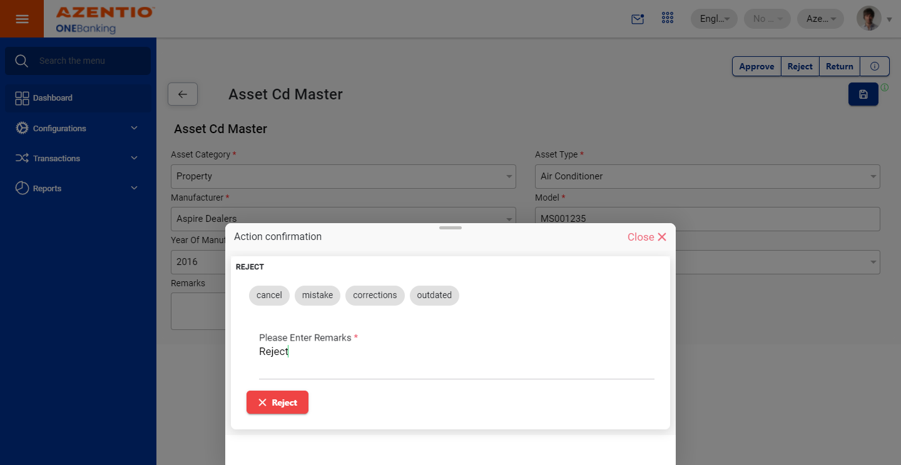And User click the final reject icon in asset CD master checkerstepdefinitions.HooksClass.addScreenshot(io.cucumber.java.Scenario)screenshot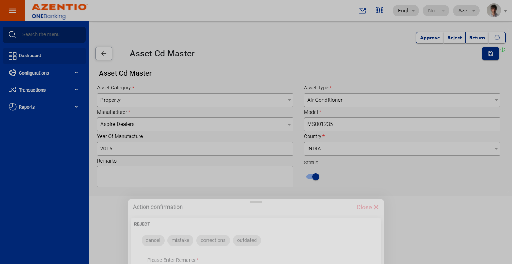Then User verify the Record got Rejected in asset CD checkerstepdefinitions.HooksClass.addScreenshot(io.cucumber.java.Scenario)screenshotPassTo verify the rejected record shown in asset CD master maker stageGiven User login as uls maker in asset CD masterstepdefinitions.HooksClass.addScreenshot(io.cucumber.java.Scenario)screenshotThen User click the Configurations in asset auto masterstepdefinitions.HooksClass.addScreenshot(io.cucumber.java.Scenario)screenshotAnd User click the config manager in Bounce masterstepdefinitions.HooksClass.addScreenshot(io.cucumber.java.Scenario)screenshotAnd Click the Asset CD Master setup eye icon in Asset CD masterstepdefinitions.HooksClass.addScreenshot(io.cucumber.java.Scenario)screenshot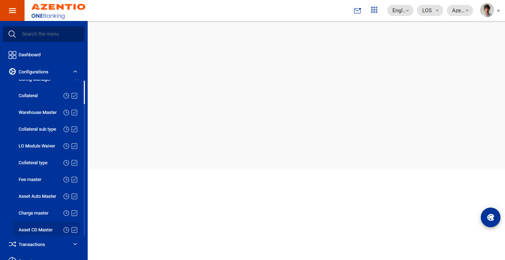Then User click the inboxmail icon in asset CD masterstepdefinitions.HooksClass.addScreenshot(io.cucumber.java.Scenario)screenshotAnd User verify the rejected record removed from the system in asset CD masterstepdefinitions.HooksClass.addScreenshot(io.cucumber.java.Scenario)screenshot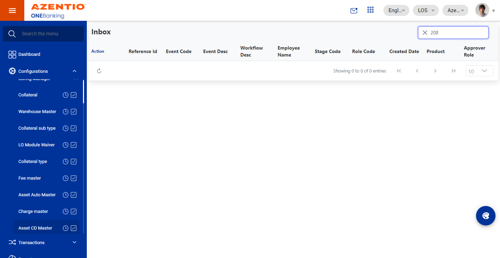PassTo verify the Asset CD Master all flowGiven User login as uls maker in asset CD masterstepdefinitions.HooksClass.addScreenshot(io.cucumber.java.Scenario)screenshotThen User click the Configurations in asset auto masterstepdefinitions.HooksClass.addScreenshot(io.cucumber.java.Scenario)screenshotAnd User click the config manager in Bounce masterstepdefinitions.HooksClass.addScreenshot(io.cucumber.java.Scenario)screenshotAnd User click the edit icon in asset CD masterstepdefinitions.HooksClass.addScreenshot(io.cucumber.java.Scenario)screenshotAnd User click the add icon in asset CD masterstepdefinitions.HooksClass.addScreenshot(io.cucumber.java.Scenario)screenshotAnd User enter the value in asset category for asset CD masterstepdefinitions.HooksClass.addScreenshot(io.cucumber.java.Scenario)screenshotAnd User enter the value in asset type for asset CD masterstepdefinitions.HooksClass.addScreenshot(io.cucumber.java.Scenario)screenshotAnd User enter the value in manufacturer for asset CD masterstepdefinitions.HooksClass.addScreenshot(io.cucumber.java.Scenario)screenshot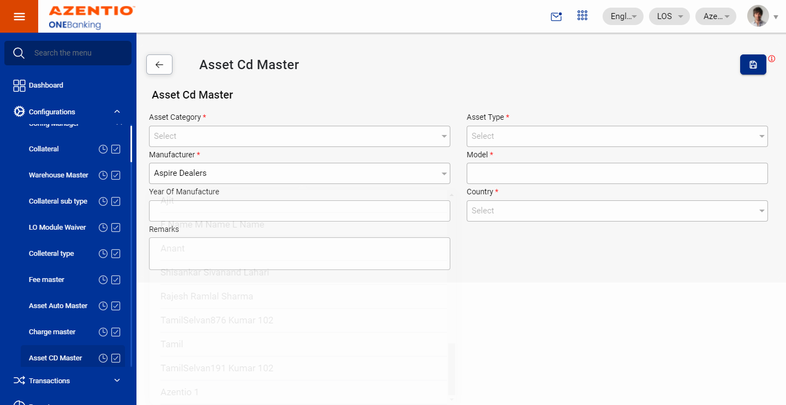And User enter the value in model for asset CD masterstepdefinitions.HooksClass.addScreenshot(io.cucumber.java.Scenario)screenshotAnd User enter the value in year of manufacture for asset CD masterstepdefinitions.HooksClass.addScreenshot(io.cucumber.java.Scenario)screenshotAnd User enter the value in country for asset CD masterstepdefinitions.HooksClass.addScreenshot(io.cucumber.java.Scenario)screenshot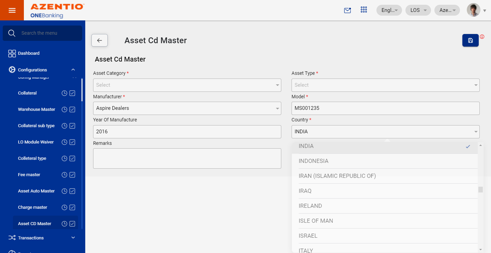And User enter the value in remarks for asset CD masterstepdefinitions.HooksClass.addScreenshot(io.cucumber.java.Scenario)screenshotAnd User click the save button for asset CD masterstepdefinitions.HooksClass.addScreenshot(io.cucumber.java.Scenario)screenshot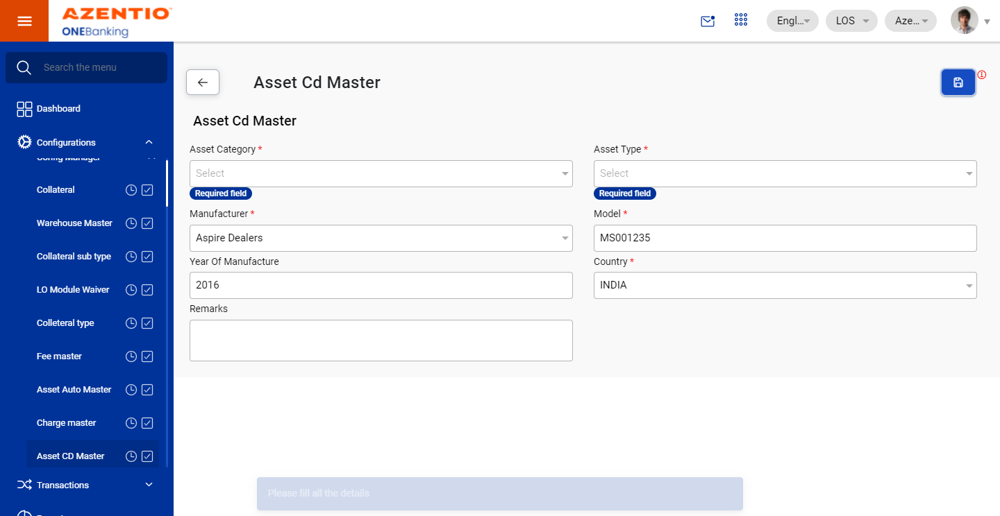Then User verify the confirmation message in asset CD masterstepdefinitions.HooksClass.addScreenshot(io.cucumber.java.Scenario)screenshot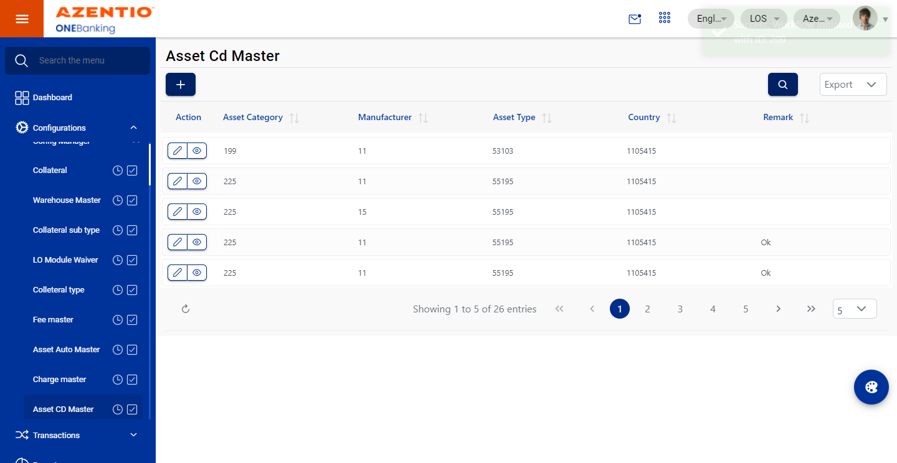Then User click the inboxmail icon in asset CD masterstepdefinitions.HooksClass.addScreenshot(io.cucumber.java.Scenario)screenshotAnd User click the search icon in asset CD master and get the reference idstepdefinitions.HooksClass.addScreenshot(io.cucumber.java.Scenario)screenshot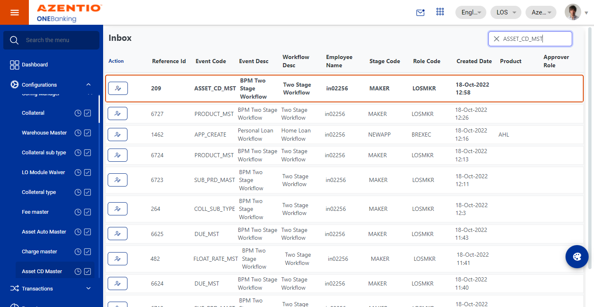And User click the submit icon in asset CD master makerstepdefinitions.HooksClass.addScreenshot(io.cucumber.java.Scenario)screenshot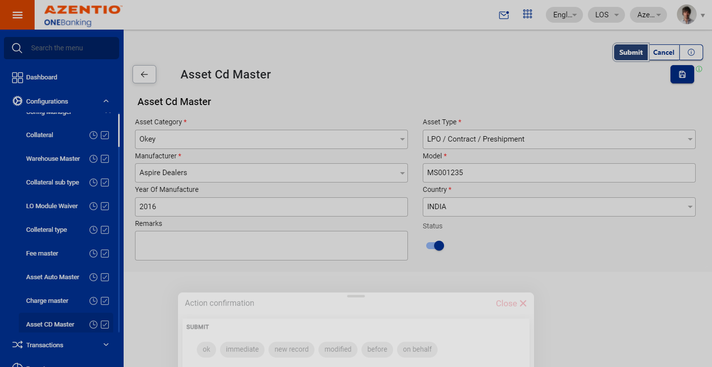And User enter the popup remark and submit the asset CD masterstepdefinitions.HooksClass.addScreenshot(io.cucumber.java.Scenario)screenshot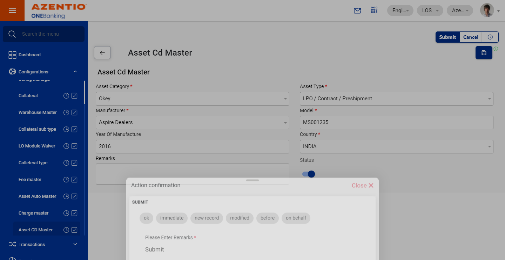And User get confirmation message and checker id in asset CD masterstepdefinitions.HooksClass.addScreenshot(io.cucumber.java.Scenario)screenshotFailTo verify the user able to reject the record in asset CD masterGiven User login as uls checker in asset CD masterstepdefinitions.HooksClass.addScreenshot(io.cucumber.java.Scenario)screenshotAnd User click the inboxicon in asset CD master checkerstepdefinitions.HooksClass.addScreenshot(io.cucumber.java.Scenario)screenshotAnd User click the search icon in asset CD master and get the reference idstepdefinitions.HooksClass.addScreenshot(io.cucumber.java.Scenario)screenshotAnd User search the respective reference id and click on Action button in asset CD masterstepdefinitions.HooksClass.addScreenshot(io.cucumber.java.Scenario)screenshotAnd User click the return icon in asset CD master checkerstepdefinitions.HooksClass.addScreenshot(io.cucumber.java.Scenario)screenshotAnd User enter the return remark in asset CD master checkerstepdefinitions.HooksClass.addScreenshot(io.cucumber.java.Scenario)screenshot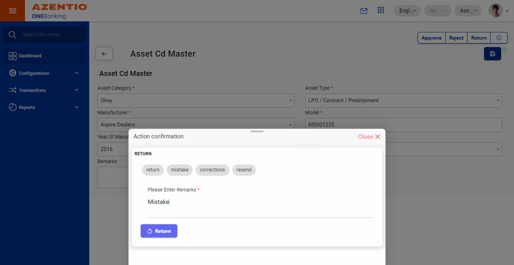And User click the final return icon in asset CD master checkerstepdefinitions.HooksClass.addScreenshot(io.cucumber.java.Scenario)screenshot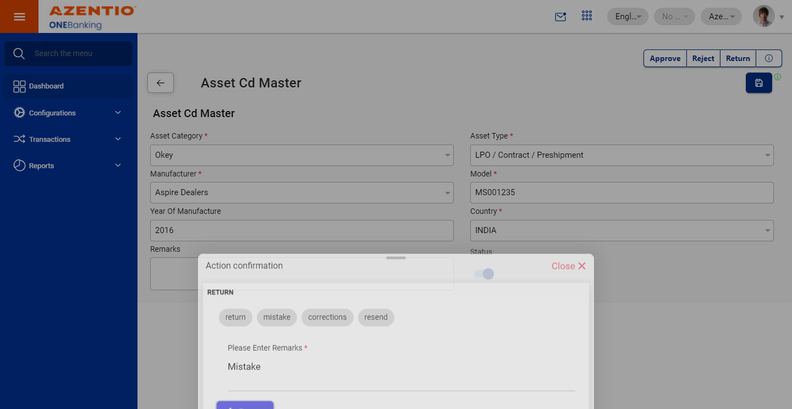Then User verify the Record got Returned in asset CD checkerstepdefinitions.HooksClass.addScreenshot(io.cucumber.java.Scenario)screenshot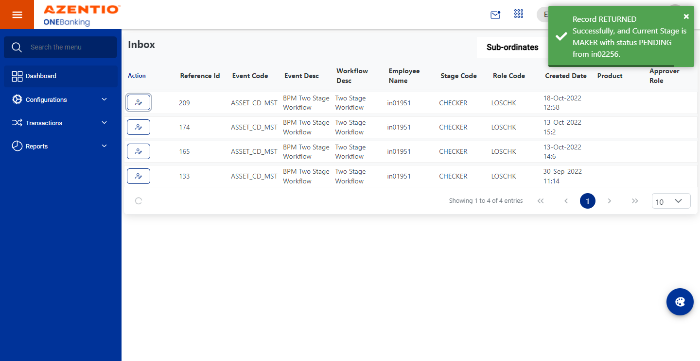PassTo verify the rejected record shown in asset CD master maker stageGiven User login as uls maker in asset CD masterstepdefinitions.HooksClass.addScreenshot(io.cucumber.java.Scenario)screenshot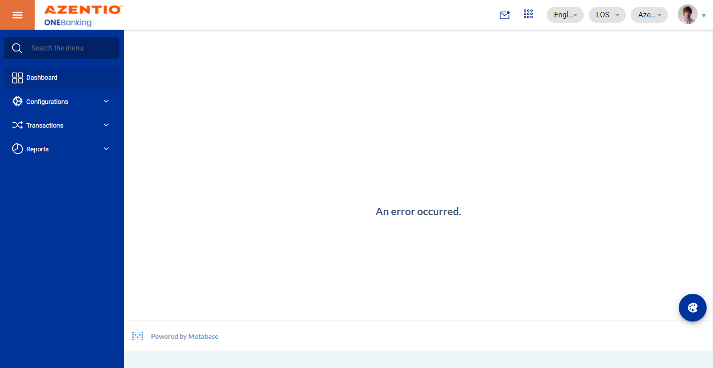Then User click the Configurations in asset auto masterstepdefinitions.HooksClass.addScreenshot(io.cucumber.java.Scenario)screenshot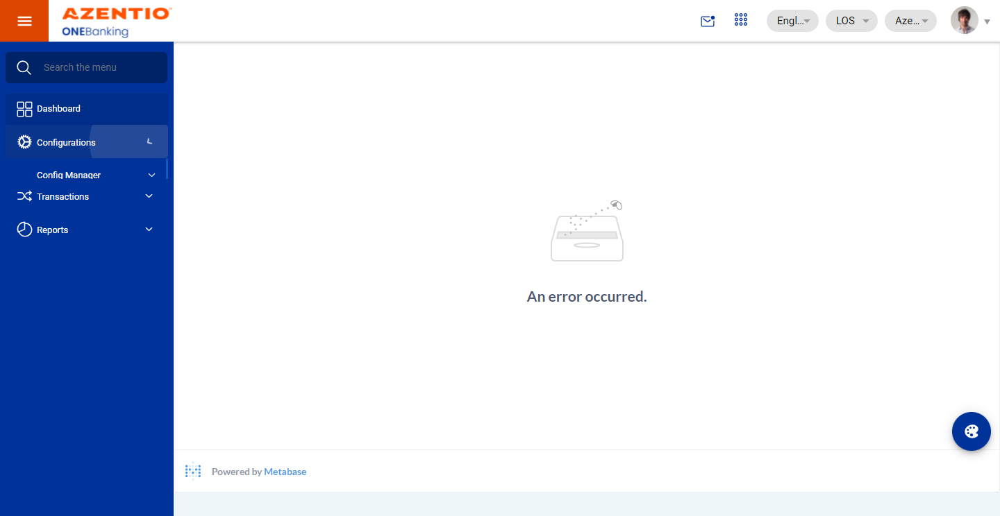And User click the config manager in Bounce masterstepdefinitions.HooksClass.addScreenshot(io.cucumber.java.Scenario)screenshot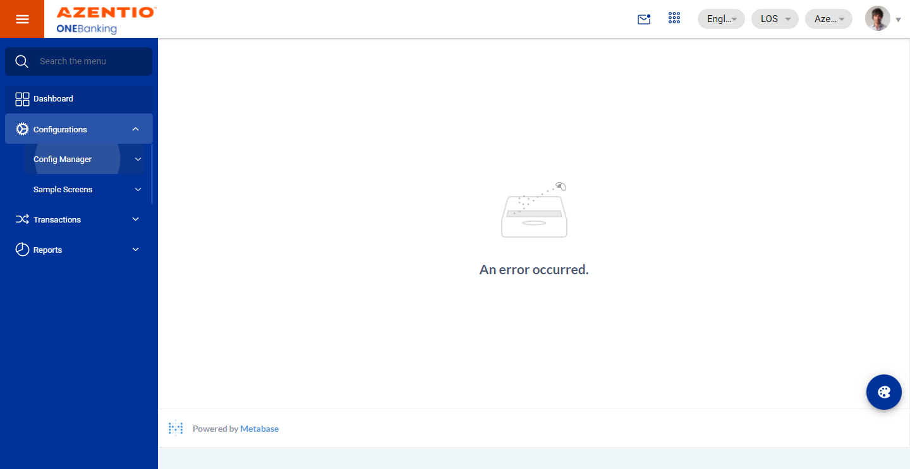And Click the Asset CD Master setup eye icon in Asset CD masterstepdefinitions.HooksClass.addScreenshot(io.cucumber.java.Scenario)screenshot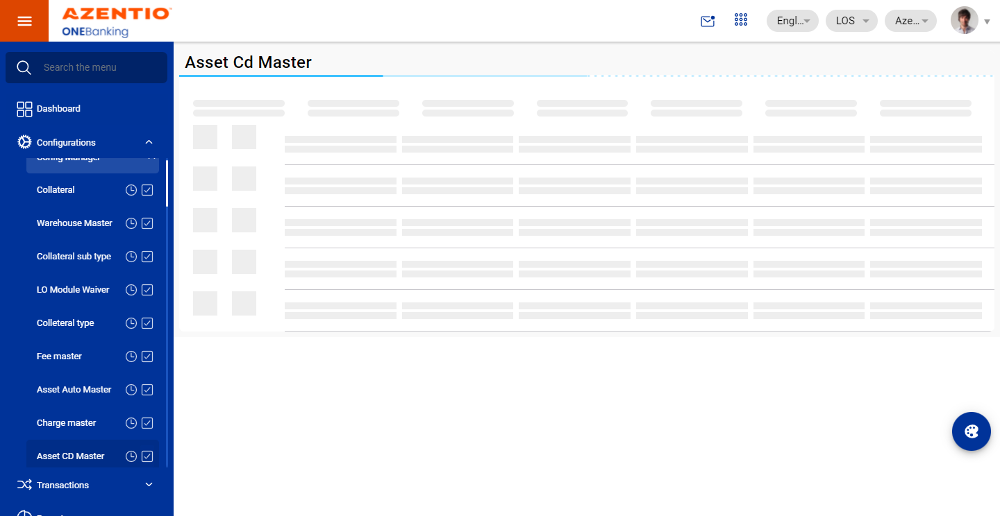Then User click the inboxmail icon in asset CD masterstepdefinitions.HooksClass.addScreenshot(io.cucumber.java.Scenario)screenshotAnd User verify the returned record removed from the system in asset CD masterstepdefinitions.HooksClass.addScreenshot(io.cucumber.java.Scenario)screenshot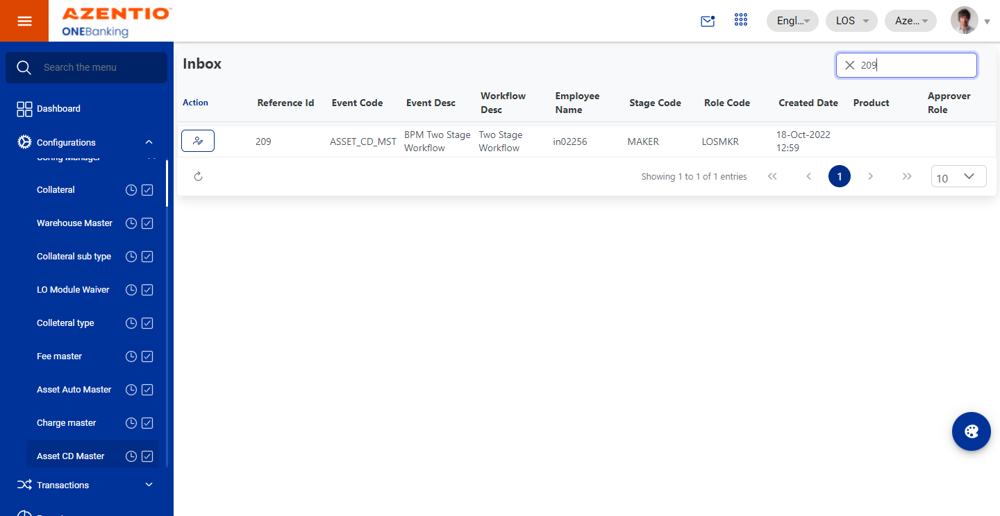PassTo verify the impact when user keep any mandatory field blank and click on save buttonGiven User login as uls maker in asset CD masterstepdefinitions.HooksClass.addScreenshot(io.cucumber.java.Scenario)screenshotThen User click the Configurations in asset auto masterstepdefinitions.HooksClass.addScreenshot(io.cucumber.java.Scenario)screenshotAnd User click the config manager in Bounce masterstepdefinitions.HooksClass.addScreenshot(io.cucumber.java.Scenario)screenshotAnd User click the edit icon in asset CD masterstepdefinitions.HooksClass.addScreenshot(io.cucumber.java.Scenario)screenshotAnd User click the add icon in asset CD masterstepdefinitions.HooksClass.addScreenshot(io.cucumber.java.Scenario)screenshot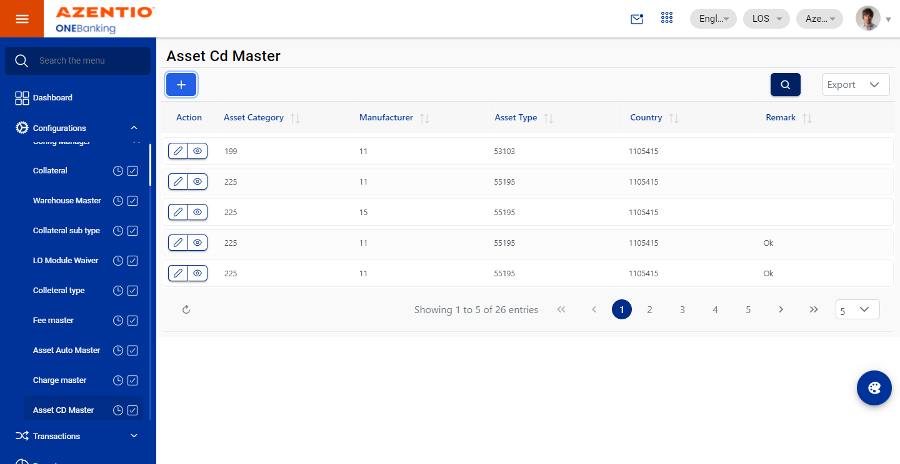And Verify the impact when user enter characters value in numeric field in asset CD masterstepdefinitions.HooksClass.addScreenshot(io.cucumber.java.Scenario)screenshotAnd Verify the impact when user enter numeric value in character field in asset CD masterstepdefinitions.HooksClass.addScreenshot(io.cucumber.java.Scenario)screenshotAnd User click the save button for asset CD masterstepdefinitions.HooksClass.addScreenshot(io.cucumber.java.Scenario)screenshot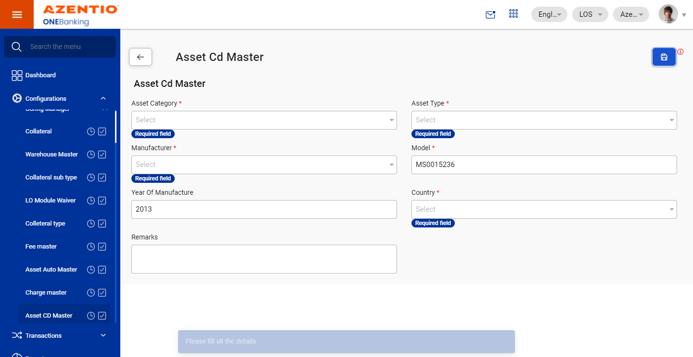And Verify the impact when user keep any mandatory field blank in asset CD masterstepdefinitions.HooksClass.addScreenshot(io.cucumber.java.Scenario)screenshot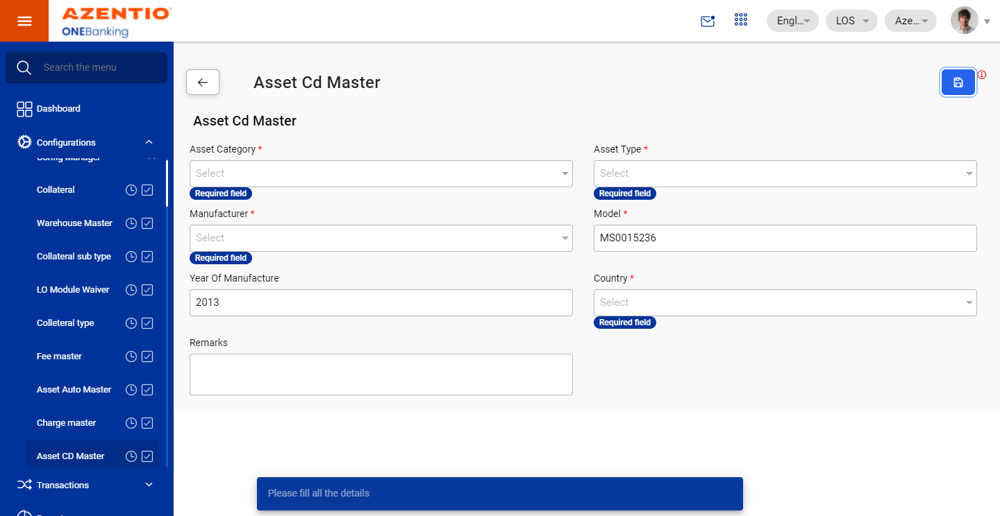PassTo verify the Asset CD Master all flowGiven User login as uls maker in asset CD masterstepdefinitions.HooksClass.addScreenshot(io.cucumber.java.Scenario)screenshot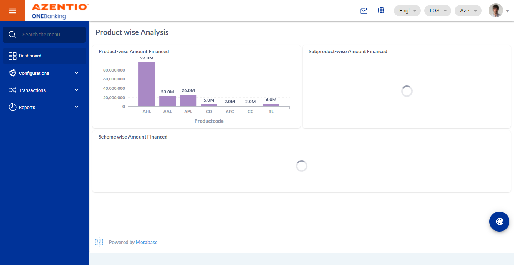Then User click the Configurations in asset auto masterstepdefinitions.HooksClass.addScreenshot(io.cucumber.java.Scenario)screenshotAnd User click the config manager in Bounce masterstepdefinitions.HooksClass.addScreenshot(io.cucumber.java.Scenario)screenshot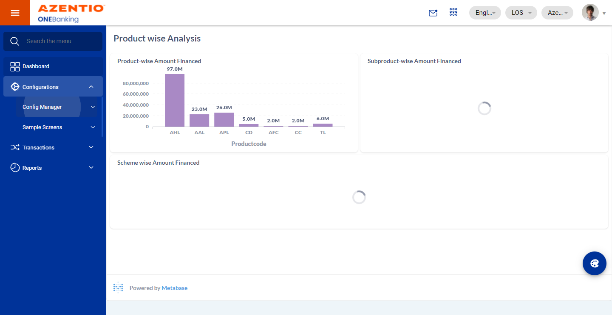And User click the edit icon in asset CD masterstepdefinitions.HooksClass.addScreenshot(io.cucumber.java.Scenario)screenshotAnd User click the add icon in asset CD masterstepdefinitions.HooksClass.addScreenshot(io.cucumber.java.Scenario)screenshotAnd User enter the value in asset category for asset CD masterstepdefinitions.HooksClass.addScreenshot(io.cucumber.java.Scenario)screenshotAnd User enter the value in asset type for asset CD masterstepdefinitions.HooksClass.addScreenshot(io.cucumber.java.Scenario)screenshot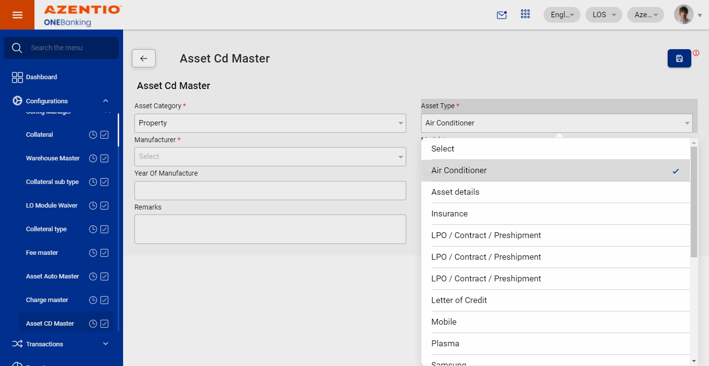And User enter the value in manufacturer for asset CD masterstepdefinitions.HooksClass.addScreenshot(io.cucumber.java.Scenario)screenshotAnd User enter the value in model for asset CD masterstepdefinitions.HooksClass.addScreenshot(io.cucumber.java.Scenario)screenshotAnd User enter the value in year of manufacture for asset CD masterstepdefinitions.HooksClass.addScreenshot(io.cucumber.java.Scenario)screenshotAnd User enter the value in country for asset CD masterstepdefinitions.HooksClass.addScreenshot(io.cucumber.java.Scenario)screenshotAnd User enter the value in remarks for asset CD masterstepdefinitions.HooksClass.addScreenshot(io.cucumber.java.Scenario)screenshotAnd User click the save button for asset CD masterstepdefinitions.HooksClass.addScreenshot(io.cucumber.java.Scenario)screenshotThen User verify the confirmation message in asset CD masterstepdefinitions.HooksClass.addScreenshot(io.cucumber.java.Scenario)screenshotThen User click the inboxmail icon in asset CD masterstepdefinitions.HooksClass.addScreenshot(io.cucumber.java.Scenario)screenshotAnd User click the search icon in asset CD master and get the reference idstepdefinitions.HooksClass.addScreenshot(io.cucumber.java.Scenario)screenshotAnd User click the submit icon in asset CD master makerstepdefinitions.HooksClass.addScreenshot(io.cucumber.java.Scenario)screenshotAnd User enter the popup remark and submit the asset CD masterstepdefinitions.HooksClass.addScreenshot(io.cucumber.java.Scenario)screenshot And User get confirmation message and checker id in asset CD masterstepdefinitions.HooksClass.addScreenshot(io.cucumber.java.Scenario)screenshotPassTo verify user able to approve in checker stage for Asset-CD-MasterGiven User login as uls checker in asset CD masterstepdefinitions.HooksClass.addScreenshot(io.cucumber.java.Scenario)screenshotAnd User click the inboxicon in asset CD master checkerstepdefinitions.HooksClass.addScreenshot(io.cucumber.java.Scenario)screenshotAnd User click the search icon in asset CD master and get the reference idstepdefinitions.HooksClass.addScreenshot(io.cucumber.java.Scenario)screenshotAnd User search the respective reference id and click on Action button in asset CD masterstepdefinitions.HooksClass.addScreenshot(io.cucumber.java.Scenario)screenshotAnd User click on Approve icon in asset CD master checkerstepdefinitions.HooksClass.addScreenshot(io.cucumber.java.Scenario)screenshotAnd User click the popup remarks in asset CD master checkerstepdefinitions.HooksClass.addScreenshot(io.cucumber.java.Scenario)screenshotThen User enter the popup remarks in asset CD master checkerstepdefinitions.HooksClass.addScreenshot(io.cucumber.java.Scenario)screenshot
And User get confirmation message and checker id in asset CD masterstepdefinitions.HooksClass.addScreenshot(io.cucumber.java.Scenario)screenshotPassTo verify user able to approve in checker stage for Asset-CD-MasterGiven User login as uls checker in asset CD masterstepdefinitions.HooksClass.addScreenshot(io.cucumber.java.Scenario)screenshotAnd User click the inboxicon in asset CD master checkerstepdefinitions.HooksClass.addScreenshot(io.cucumber.java.Scenario)screenshotAnd User click the search icon in asset CD master and get the reference idstepdefinitions.HooksClass.addScreenshot(io.cucumber.java.Scenario)screenshotAnd User search the respective reference id and click on Action button in asset CD masterstepdefinitions.HooksClass.addScreenshot(io.cucumber.java.Scenario)screenshotAnd User click on Approve icon in asset CD master checkerstepdefinitions.HooksClass.addScreenshot(io.cucumber.java.Scenario)screenshotAnd User click the popup remarks in asset CD master checkerstepdefinitions.HooksClass.addScreenshot(io.cucumber.java.Scenario)screenshotThen User enter the popup remarks in asset CD master checkerstepdefinitions.HooksClass.addScreenshot(io.cucumber.java.Scenario)screenshot And User click the popup approve in asset CD master checkerstepdefinitions.HooksClass.addScreenshot(io.cucumber.java.Scenario)screenshotThen User verify the Record got Approved in asset CD checkerstepdefinitions.HooksClass.addScreenshot(io.cucumber.java.Scenario)screenshotPassTo verify system allow user to modify the Personal details before approve the recordGiven User login as uls maker in asset CD masterstepdefinitions.HooksClass.addScreenshot(io.cucumber.java.Scenario)screenshotThen User click the Configurations in asset auto masterstepdefinitions.HooksClass.addScreenshot(io.cucumber.java.Scenario)screenshotAnd User click the config manager in Bounce masterstepdefinitions.HooksClass.addScreenshot(io.cucumber.java.Scenario)screenshotAnd Click the Asset CD Master setup eye icon in Asset CD masterstepdefinitions.HooksClass.addScreenshot(io.cucumber.java.Scenario)screenshotAnd Click the listview pencil icon in asset CD masterstepdefinitions.HooksClass.addScreenshot(io.cucumber.java.Scenario)screenshotAnd User update the assetcategory in asset CD masterstepdefinitions.HooksClass.addScreenshot(io.cucumber.java.Scenario)screenshotAnd User update the model in asset CD masterstepdefinitions.HooksClass.addScreenshot(io.cucumber.java.Scenario)screenshot
And User click the popup approve in asset CD master checkerstepdefinitions.HooksClass.addScreenshot(io.cucumber.java.Scenario)screenshotThen User verify the Record got Approved in asset CD checkerstepdefinitions.HooksClass.addScreenshot(io.cucumber.java.Scenario)screenshotPassTo verify system allow user to modify the Personal details before approve the recordGiven User login as uls maker in asset CD masterstepdefinitions.HooksClass.addScreenshot(io.cucumber.java.Scenario)screenshotThen User click the Configurations in asset auto masterstepdefinitions.HooksClass.addScreenshot(io.cucumber.java.Scenario)screenshotAnd User click the config manager in Bounce masterstepdefinitions.HooksClass.addScreenshot(io.cucumber.java.Scenario)screenshotAnd Click the Asset CD Master setup eye icon in Asset CD masterstepdefinitions.HooksClass.addScreenshot(io.cucumber.java.Scenario)screenshotAnd Click the listview pencil icon in asset CD masterstepdefinitions.HooksClass.addScreenshot(io.cucumber.java.Scenario)screenshotAnd User update the assetcategory in asset CD masterstepdefinitions.HooksClass.addScreenshot(io.cucumber.java.Scenario)screenshotAnd User update the model in asset CD masterstepdefinitions.HooksClass.addScreenshot(io.cucumber.java.Scenario)screenshot And User click the update button for asset CD masterstepdefinitions.HooksClass.addScreenshot(io.cucumber.java.Scenario)screenshotAnd User verify while modification keep any mandatory field blank and click on save buttonstepdefinitions.HooksClass.addScreenshot(io.cucumber.java.Scenario)screenshotAnd User update the assettype in asset CD masterstepdefinitions.HooksClass.addScreenshot(io.cucumber.java.Scenario)screenshotAnd User click the update button for asset CD masterstepdefinitions.HooksClass.addScreenshot(io.cucumber.java.Scenario)screenshotFailTo verify the Asset CD Master all flowGiven User login as uls maker in asset CD masterstepdefinitions.HooksClass.addScreenshot(io.cucumber.java.Scenario)screenshotThen User click the Configurations in asset auto masterstepdefinitions.HooksClass.addScreenshot(io.cucumber.java.Scenario)screenshotAnd User click the config manager in Bounce masterstepdefinitions.HooksClass.addScreenshot(io.cucumber.java.Scenario)screenshotAnd User click the edit icon in asset CD masterstepdefinitions.HooksClass.addScreenshot(io.cucumber.java.Scenario)screenshotAnd User click the add icon in asset CD masterstepdefinitions.HooksClass.addScreenshot(io.cucumber.java.Scenario)screenshotAnd User enter the value in asset category for asset CD masterstepdefinitions.HooksClass.addScreenshot(io.cucumber.java.Scenario)screenshotAnd User enter the value in asset type for asset CD masterstepdefinitions.HooksClass.addScreenshot(io.cucumber.java.Scenario)screenshotAnd User enter the value in manufacturer for asset CD masterstepdefinitions.HooksClass.addScreenshot(io.cucumber.java.Scenario)screenshotAnd User enter the value in model for asset CD masterstepdefinitions.HooksClass.addScreenshot(io.cucumber.java.Scenario)screenshot
And User click the update button for asset CD masterstepdefinitions.HooksClass.addScreenshot(io.cucumber.java.Scenario)screenshotAnd User verify while modification keep any mandatory field blank and click on save buttonstepdefinitions.HooksClass.addScreenshot(io.cucumber.java.Scenario)screenshotAnd User update the assettype in asset CD masterstepdefinitions.HooksClass.addScreenshot(io.cucumber.java.Scenario)screenshotAnd User click the update button for asset CD masterstepdefinitions.HooksClass.addScreenshot(io.cucumber.java.Scenario)screenshotFailTo verify the Asset CD Master all flowGiven User login as uls maker in asset CD masterstepdefinitions.HooksClass.addScreenshot(io.cucumber.java.Scenario)screenshotThen User click the Configurations in asset auto masterstepdefinitions.HooksClass.addScreenshot(io.cucumber.java.Scenario)screenshotAnd User click the config manager in Bounce masterstepdefinitions.HooksClass.addScreenshot(io.cucumber.java.Scenario)screenshotAnd User click the edit icon in asset CD masterstepdefinitions.HooksClass.addScreenshot(io.cucumber.java.Scenario)screenshotAnd User click the add icon in asset CD masterstepdefinitions.HooksClass.addScreenshot(io.cucumber.java.Scenario)screenshotAnd User enter the value in asset category for asset CD masterstepdefinitions.HooksClass.addScreenshot(io.cucumber.java.Scenario)screenshotAnd User enter the value in asset type for asset CD masterstepdefinitions.HooksClass.addScreenshot(io.cucumber.java.Scenario)screenshotAnd User enter the value in manufacturer for asset CD masterstepdefinitions.HooksClass.addScreenshot(io.cucumber.java.Scenario)screenshotAnd User enter the value in model for asset CD masterstepdefinitions.HooksClass.addScreenshot(io.cucumber.java.Scenario)screenshot And User enter the value in year of manufacture for asset CD masterstepdefinitions.HooksClass.addScreenshot(io.cucumber.java.Scenario)screenshot
And User enter the value in year of manufacture for asset CD masterstepdefinitions.HooksClass.addScreenshot(io.cucumber.java.Scenario)screenshot And User enter the value in country for asset CD masterstepdefinitions.HooksClass.addScreenshot(io.cucumber.java.Scenario)screenshot
And User enter the value in country for asset CD masterstepdefinitions.HooksClass.addScreenshot(io.cucumber.java.Scenario)screenshot And User enter the value in remarks for asset CD masterStep skippedAnd User click the save button for asset CD masterStep skippedThen User verify the confirmation message in asset CD masterStep skippedThen User click the inboxmail icon in asset CD masterStep skippedAnd User click the search icon in asset CD master and get the reference idStep skippedAnd User click the submit icon in asset CD master makerStep skippedAnd User enter the popup remark and submit the asset CD masterStep skippedAnd User get confirmation message and checker id in asset CD masterStep skippedPassTo verify user able to approve in checker stage for Asset-CD-MasterGiven User login as uls checker in asset CD masterstepdefinitions.HooksClass.addScreenshot(io.cucumber.java.Scenario)screenshotAnd User click the inboxicon in asset CD master checkerstepdefinitions.HooksClass.addScreenshot(io.cucumber.java.Scenario)screenshotAnd User click the search icon in asset CD master and get the reference idstepdefinitions.HooksClass.addScreenshot(io.cucumber.java.Scenario)screenshotAnd User search the respective reference id and click on Action button in asset CD masterstepdefinitions.HooksClass.addScreenshot(io.cucumber.java.Scenario)screenshotAnd User click on Approve icon in asset CD master checkerstepdefinitions.HooksClass.addScreenshot(io.cucumber.java.Scenario)screenshotAnd User click the popup remarks in asset CD master checkerstepdefinitions.HooksClass.addScreenshot(io.cucumber.java.Scenario)screenshotThen User enter the popup remarks in asset CD master checkerstepdefinitions.HooksClass.addScreenshot(io.cucumber.java.Scenario)screenshotAnd User click the popup approve in asset CD master checkerstepdefinitions.HooksClass.addScreenshot(io.cucumber.java.Scenario)screenshotThen User verify the Record got Approved in asset CD checkerstepdefinitions.HooksClass.addScreenshot(io.cucumber.java.Scenario)screenshotFailTo verify the functionality of Submit button at Maker stageGiven User login as uls maker in asset CD masterstepdefinitions.HooksClass.addScreenshot(io.cucumber.java.Scenario)screenshotThen User click the Configurations in asset auto masterstepdefinitions.HooksClass.addScreenshot(io.cucumber.java.Scenario)screenshotAnd User click the config manager in Bounce masterstepdefinitions.HooksClass.addScreenshot(io.cucumber.java.Scenario)screenshotAnd Click the Asset CD Master setup eye icon in Asset CD masterstepdefinitions.HooksClass.addScreenshot(io.cucumber.java.Scenario)screenshotAnd Click the listview pencil icon in asset CD masterstepdefinitions.HooksClass.addScreenshot(io.cucumber.java.Scenario)screenshotAnd User update the assetcategory in asset CD masterstepdefinitions.HooksClass.addScreenshot(io.cucumber.java.Scenario)screenshotAnd User update the assettype in asset CD masterstepdefinitions.HooksClass.addScreenshot(io.cucumber.java.Scenario)screenshotAnd User click the update button for asset CD masterstepdefinitions.HooksClass.addScreenshot(io.cucumber.java.Scenario)screenshotThen User verify the confirmation message in asset CD masterstepdefinitions.HooksClass.addScreenshot(io.cucumber.java.Scenario)screenshotThen User click the inboxmail icon in asset CD masterStep skippedAnd User click the search icon in asset CD master and get the reference idStep skippedAnd User click the submit icon in asset CD master makerStep skippedAnd User enter the popup remark and submit the asset CD masterStep skippedAnd User get confirmation message and checker id in asset CD masterStep skippedPassTo verify the functionality of Approve button at Checker stageGiven User login as uls checker in asset CD masterstepdefinitions.HooksClass.addScreenshot(io.cucumber.java.Scenario)screenshotAnd User click the inboxicon in asset CD master checkerstepdefinitions.HooksClass.addScreenshot(io.cucumber.java.Scenario)screenshotAnd User click the search icon in asset CD master and get the reference idstepdefinitions.HooksClass.addScreenshot(io.cucumber.java.Scenario)screenshotAnd User search the respective reference id and click on Action button in asset CD masterstepdefinitions.HooksClass.addScreenshot(io.cucumber.java.Scenario)screenshotAnd User click on Approve icon in asset CD master checkerstepdefinitions.HooksClass.addScreenshot(io.cucumber.java.Scenario)screenshot
And User enter the value in remarks for asset CD masterStep skippedAnd User click the save button for asset CD masterStep skippedThen User verify the confirmation message in asset CD masterStep skippedThen User click the inboxmail icon in asset CD masterStep skippedAnd User click the search icon in asset CD master and get the reference idStep skippedAnd User click the submit icon in asset CD master makerStep skippedAnd User enter the popup remark and submit the asset CD masterStep skippedAnd User get confirmation message and checker id in asset CD masterStep skippedPassTo verify user able to approve in checker stage for Asset-CD-MasterGiven User login as uls checker in asset CD masterstepdefinitions.HooksClass.addScreenshot(io.cucumber.java.Scenario)screenshotAnd User click the inboxicon in asset CD master checkerstepdefinitions.HooksClass.addScreenshot(io.cucumber.java.Scenario)screenshotAnd User click the search icon in asset CD master and get the reference idstepdefinitions.HooksClass.addScreenshot(io.cucumber.java.Scenario)screenshotAnd User search the respective reference id and click on Action button in asset CD masterstepdefinitions.HooksClass.addScreenshot(io.cucumber.java.Scenario)screenshotAnd User click on Approve icon in asset CD master checkerstepdefinitions.HooksClass.addScreenshot(io.cucumber.java.Scenario)screenshotAnd User click the popup remarks in asset CD master checkerstepdefinitions.HooksClass.addScreenshot(io.cucumber.java.Scenario)screenshotThen User enter the popup remarks in asset CD master checkerstepdefinitions.HooksClass.addScreenshot(io.cucumber.java.Scenario)screenshotAnd User click the popup approve in asset CD master checkerstepdefinitions.HooksClass.addScreenshot(io.cucumber.java.Scenario)screenshotThen User verify the Record got Approved in asset CD checkerstepdefinitions.HooksClass.addScreenshot(io.cucumber.java.Scenario)screenshotFailTo verify the functionality of Submit button at Maker stageGiven User login as uls maker in asset CD masterstepdefinitions.HooksClass.addScreenshot(io.cucumber.java.Scenario)screenshotThen User click the Configurations in asset auto masterstepdefinitions.HooksClass.addScreenshot(io.cucumber.java.Scenario)screenshotAnd User click the config manager in Bounce masterstepdefinitions.HooksClass.addScreenshot(io.cucumber.java.Scenario)screenshotAnd Click the Asset CD Master setup eye icon in Asset CD masterstepdefinitions.HooksClass.addScreenshot(io.cucumber.java.Scenario)screenshotAnd Click the listview pencil icon in asset CD masterstepdefinitions.HooksClass.addScreenshot(io.cucumber.java.Scenario)screenshotAnd User update the assetcategory in asset CD masterstepdefinitions.HooksClass.addScreenshot(io.cucumber.java.Scenario)screenshotAnd User update the assettype in asset CD masterstepdefinitions.HooksClass.addScreenshot(io.cucumber.java.Scenario)screenshotAnd User click the update button for asset CD masterstepdefinitions.HooksClass.addScreenshot(io.cucumber.java.Scenario)screenshotThen User verify the confirmation message in asset CD masterstepdefinitions.HooksClass.addScreenshot(io.cucumber.java.Scenario)screenshotThen User click the inboxmail icon in asset CD masterStep skippedAnd User click the search icon in asset CD master and get the reference idStep skippedAnd User click the submit icon in asset CD master makerStep skippedAnd User enter the popup remark and submit the asset CD masterStep skippedAnd User get confirmation message and checker id in asset CD masterStep skippedPassTo verify the functionality of Approve button at Checker stageGiven User login as uls checker in asset CD masterstepdefinitions.HooksClass.addScreenshot(io.cucumber.java.Scenario)screenshotAnd User click the inboxicon in asset CD master checkerstepdefinitions.HooksClass.addScreenshot(io.cucumber.java.Scenario)screenshotAnd User click the search icon in asset CD master and get the reference idstepdefinitions.HooksClass.addScreenshot(io.cucumber.java.Scenario)screenshotAnd User search the respective reference id and click on Action button in asset CD masterstepdefinitions.HooksClass.addScreenshot(io.cucumber.java.Scenario)screenshotAnd User click on Approve icon in asset CD master checkerstepdefinitions.HooksClass.addScreenshot(io.cucumber.java.Scenario)screenshot And User click the popup remarks in asset CD master checkerstepdefinitions.HooksClass.addScreenshot(io.cucumber.java.Scenario)screenshotThen User enter the popup remarks in asset CD master checkerstepdefinitions.HooksClass.addScreenshot(io.cucumber.java.Scenario)screenshotAnd User click the popup approve in asset CD master checkerstepdefinitions.HooksClass.addScreenshot(io.cucumber.java.Scenario)screenshotThen User verify the Record got Approved in asset CD checkerstepdefinitions.HooksClass.addScreenshot(io.cucumber.java.Scenario)screenshotPassTo verify user able to approve in checker stage for Asset-CD-MasterGiven User login as uls maker in asset CD masterstepdefinitions.HooksClass.addScreenshot(io.cucumber.java.Scenario)screenshotThen User click the Configurations in asset auto masterstepdefinitions.HooksClass.addScreenshot(io.cucumber.java.Scenario)screenshot
And User click the popup remarks in asset CD master checkerstepdefinitions.HooksClass.addScreenshot(io.cucumber.java.Scenario)screenshotThen User enter the popup remarks in asset CD master checkerstepdefinitions.HooksClass.addScreenshot(io.cucumber.java.Scenario)screenshotAnd User click the popup approve in asset CD master checkerstepdefinitions.HooksClass.addScreenshot(io.cucumber.java.Scenario)screenshotThen User verify the Record got Approved in asset CD checkerstepdefinitions.HooksClass.addScreenshot(io.cucumber.java.Scenario)screenshotPassTo verify user able to approve in checker stage for Asset-CD-MasterGiven User login as uls maker in asset CD masterstepdefinitions.HooksClass.addScreenshot(io.cucumber.java.Scenario)screenshotThen User click the Configurations in asset auto masterstepdefinitions.HooksClass.addScreenshot(io.cucumber.java.Scenario)screenshot And User click the config manager in Bounce masterstepdefinitions.HooksClass.addScreenshot(io.cucumber.java.Scenario)screenshotAnd Click the Asset CD Master setup eye icon in Asset CD masterstepdefinitions.HooksClass.addScreenshot(io.cucumber.java.Scenario)screenshotThen User validate the updated record in list view in Asset CD masterstepdefinitions.HooksClass.addScreenshot(io.cucumber.java.Scenario)screenshotPassTo verify the Asset CD Master all flowGiven User login as uls maker in asset CD masterstepdefinitions.HooksClass.addScreenshot(io.cucumber.java.Scenario)screenshotThen User click the Configurations in asset auto masterstepdefinitions.HooksClass.addScreenshot(io.cucumber.java.Scenario)screenshotAnd User click the config manager in Bounce masterstepdefinitions.HooksClass.addScreenshot(io.cucumber.java.Scenario)screenshotAnd User click the edit icon in asset CD masterstepdefinitions.HooksClass.addScreenshot(io.cucumber.java.Scenario)screenshotAnd User click the add icon in asset CD masterstepdefinitions.HooksClass.addScreenshot(io.cucumber.java.Scenario)screenshotAnd User enter the value in asset category for asset CD masterstepdefinitions.HooksClass.addScreenshot(io.cucumber.java.Scenario)screenshotAnd User enter the value in asset type for asset CD masterstepdefinitions.HooksClass.addScreenshot(io.cucumber.java.Scenario)screenshotAnd User enter the value in manufacturer for asset CD masterstepdefinitions.HooksClass.addScreenshot(io.cucumber.java.Scenario)screenshotAnd User enter the value in model for asset CD masterstepdefinitions.HooksClass.addScreenshot(io.cucumber.java.Scenario)screenshotAnd User enter the value in year of manufacture for asset CD masterstepdefinitions.HooksClass.addScreenshot(io.cucumber.java.Scenario)screenshotAnd User enter the value in country for asset CD masterstepdefinitions.HooksClass.addScreenshot(io.cucumber.java.Scenario)screenshotAnd User enter the value in remarks for asset CD masterstepdefinitions.HooksClass.addScreenshot(io.cucumber.java.Scenario)screenshotAnd User click the save button for asset CD masterstepdefinitions.HooksClass.addScreenshot(io.cucumber.java.Scenario)screenshotThen User verify the confirmation message in asset CD masterstepdefinitions.HooksClass.addScreenshot(io.cucumber.java.Scenario)screenshotThen User click the inboxmail icon in asset CD masterstepdefinitions.HooksClass.addScreenshot(io.cucumber.java.Scenario)screenshotAnd User click the search icon in asset CD master and get the reference idstepdefinitions.HooksClass.addScreenshot(io.cucumber.java.Scenario)screenshotAnd User click the submit icon in asset CD master makerstepdefinitions.HooksClass.addScreenshot(io.cucumber.java.Scenario)screenshot
And User click the config manager in Bounce masterstepdefinitions.HooksClass.addScreenshot(io.cucumber.java.Scenario)screenshotAnd Click the Asset CD Master setup eye icon in Asset CD masterstepdefinitions.HooksClass.addScreenshot(io.cucumber.java.Scenario)screenshotThen User validate the updated record in list view in Asset CD masterstepdefinitions.HooksClass.addScreenshot(io.cucumber.java.Scenario)screenshotPassTo verify the Asset CD Master all flowGiven User login as uls maker in asset CD masterstepdefinitions.HooksClass.addScreenshot(io.cucumber.java.Scenario)screenshotThen User click the Configurations in asset auto masterstepdefinitions.HooksClass.addScreenshot(io.cucumber.java.Scenario)screenshotAnd User click the config manager in Bounce masterstepdefinitions.HooksClass.addScreenshot(io.cucumber.java.Scenario)screenshotAnd User click the edit icon in asset CD masterstepdefinitions.HooksClass.addScreenshot(io.cucumber.java.Scenario)screenshotAnd User click the add icon in asset CD masterstepdefinitions.HooksClass.addScreenshot(io.cucumber.java.Scenario)screenshotAnd User enter the value in asset category for asset CD masterstepdefinitions.HooksClass.addScreenshot(io.cucumber.java.Scenario)screenshotAnd User enter the value in asset type for asset CD masterstepdefinitions.HooksClass.addScreenshot(io.cucumber.java.Scenario)screenshotAnd User enter the value in manufacturer for asset CD masterstepdefinitions.HooksClass.addScreenshot(io.cucumber.java.Scenario)screenshotAnd User enter the value in model for asset CD masterstepdefinitions.HooksClass.addScreenshot(io.cucumber.java.Scenario)screenshotAnd User enter the value in year of manufacture for asset CD masterstepdefinitions.HooksClass.addScreenshot(io.cucumber.java.Scenario)screenshotAnd User enter the value in country for asset CD masterstepdefinitions.HooksClass.addScreenshot(io.cucumber.java.Scenario)screenshotAnd User enter the value in remarks for asset CD masterstepdefinitions.HooksClass.addScreenshot(io.cucumber.java.Scenario)screenshotAnd User click the save button for asset CD masterstepdefinitions.HooksClass.addScreenshot(io.cucumber.java.Scenario)screenshotThen User verify the confirmation message in asset CD masterstepdefinitions.HooksClass.addScreenshot(io.cucumber.java.Scenario)screenshotThen User click the inboxmail icon in asset CD masterstepdefinitions.HooksClass.addScreenshot(io.cucumber.java.Scenario)screenshotAnd User click the search icon in asset CD master and get the reference idstepdefinitions.HooksClass.addScreenshot(io.cucumber.java.Scenario)screenshotAnd User click the submit icon in asset CD master makerstepdefinitions.HooksClass.addScreenshot(io.cucumber.java.Scenario)screenshot And User enter the popup remark and submit the asset CD masterstepdefinitions.HooksClass.addScreenshot(io.cucumber.java.Scenario)screenshotAnd User get confirmation message and checker id in asset CD masterstepdefinitions.HooksClass.addScreenshot(io.cucumber.java.Scenario)screenshotPassTo verify user able to approve in checker stage for Asset-CD-MasterGiven User login as uls checker in asset CD masterstepdefinitions.HooksClass.addScreenshot(io.cucumber.java.Scenario)screenshotAnd User click the inboxicon in asset CD master checkerstepdefinitions.HooksClass.addScreenshot(io.cucumber.java.Scenario)screenshotAnd User click the search icon in asset CD master and get the reference idstepdefinitions.HooksClass.addScreenshot(io.cucumber.java.Scenario)screenshotAnd User search the respective reference id and click on Action button in asset CD masterstepdefinitions.HooksClass.addScreenshot(io.cucumber.java.Scenario)screenshotAnd User click on Approve icon in asset CD master checkerstepdefinitions.HooksClass.addScreenshot(io.cucumber.java.Scenario)screenshot
And User enter the popup remark and submit the asset CD masterstepdefinitions.HooksClass.addScreenshot(io.cucumber.java.Scenario)screenshotAnd User get confirmation message and checker id in asset CD masterstepdefinitions.HooksClass.addScreenshot(io.cucumber.java.Scenario)screenshotPassTo verify user able to approve in checker stage for Asset-CD-MasterGiven User login as uls checker in asset CD masterstepdefinitions.HooksClass.addScreenshot(io.cucumber.java.Scenario)screenshotAnd User click the inboxicon in asset CD master checkerstepdefinitions.HooksClass.addScreenshot(io.cucumber.java.Scenario)screenshotAnd User click the search icon in asset CD master and get the reference idstepdefinitions.HooksClass.addScreenshot(io.cucumber.java.Scenario)screenshotAnd User search the respective reference id and click on Action button in asset CD masterstepdefinitions.HooksClass.addScreenshot(io.cucumber.java.Scenario)screenshotAnd User click on Approve icon in asset CD master checkerstepdefinitions.HooksClass.addScreenshot(io.cucumber.java.Scenario)screenshot And User click the popup remarks in asset CD master checkerstepdefinitions.HooksClass.addScreenshot(io.cucumber.java.Scenario)screenshotThen User enter the popup remarks in asset CD master checkerstepdefinitions.HooksClass.addScreenshot(io.cucumber.java.Scenario)screenshot
And User click the popup remarks in asset CD master checkerstepdefinitions.HooksClass.addScreenshot(io.cucumber.java.Scenario)screenshotThen User enter the popup remarks in asset CD master checkerstepdefinitions.HooksClass.addScreenshot(io.cucumber.java.Scenario)screenshot And User click the popup approve in asset CD master checkerstepdefinitions.HooksClass.addScreenshot(io.cucumber.java.Scenario)screenshotThen User verify the Record got Approved in asset CD checkerstepdefinitions.HooksClass.addScreenshot(io.cucumber.java.Scenario)screenshotPassTo verify the functionality of Submit button at Maker stageGiven User login as uls maker in asset CD masterstepdefinitions.HooksClass.addScreenshot(io.cucumber.java.Scenario)screenshotThen User click the Configurations in asset auto masterstepdefinitions.HooksClass.addScreenshot(io.cucumber.java.Scenario)screenshotAnd User click the config manager in Bounce masterstepdefinitions.HooksClass.addScreenshot(io.cucumber.java.Scenario)screenshotAnd Click the Asset CD Master setup eye icon in Asset CD masterstepdefinitions.HooksClass.addScreenshot(io.cucumber.java.Scenario)screenshotAnd Click the listview pencil icon in asset CD masterstepdefinitions.HooksClass.addScreenshot(io.cucumber.java.Scenario)screenshotAnd User update the assetcategory in asset CD masterstepdefinitions.HooksClass.addScreenshot(io.cucumber.java.Scenario)screenshotAnd User update the assettype in asset CD masterstepdefinitions.HooksClass.addScreenshot(io.cucumber.java.Scenario)screenshotAnd User click the update button for asset CD masterstepdefinitions.HooksClass.addScreenshot(io.cucumber.java.Scenario)screenshotThen User verify the confirmation message in asset CD masterstepdefinitions.HooksClass.addScreenshot(io.cucumber.java.Scenario)screenshotThen User click the inboxmail icon in asset CD masterstepdefinitions.HooksClass.addScreenshot(io.cucumber.java.Scenario)screenshotAnd User click the search icon in asset CD master and get the reference idstepdefinitions.HooksClass.addScreenshot(io.cucumber.java.Scenario)screenshot
And User click the popup approve in asset CD master checkerstepdefinitions.HooksClass.addScreenshot(io.cucumber.java.Scenario)screenshotThen User verify the Record got Approved in asset CD checkerstepdefinitions.HooksClass.addScreenshot(io.cucumber.java.Scenario)screenshotPassTo verify the functionality of Submit button at Maker stageGiven User login as uls maker in asset CD masterstepdefinitions.HooksClass.addScreenshot(io.cucumber.java.Scenario)screenshotThen User click the Configurations in asset auto masterstepdefinitions.HooksClass.addScreenshot(io.cucumber.java.Scenario)screenshotAnd User click the config manager in Bounce masterstepdefinitions.HooksClass.addScreenshot(io.cucumber.java.Scenario)screenshotAnd Click the Asset CD Master setup eye icon in Asset CD masterstepdefinitions.HooksClass.addScreenshot(io.cucumber.java.Scenario)screenshotAnd Click the listview pencil icon in asset CD masterstepdefinitions.HooksClass.addScreenshot(io.cucumber.java.Scenario)screenshotAnd User update the assetcategory in asset CD masterstepdefinitions.HooksClass.addScreenshot(io.cucumber.java.Scenario)screenshotAnd User update the assettype in asset CD masterstepdefinitions.HooksClass.addScreenshot(io.cucumber.java.Scenario)screenshotAnd User click the update button for asset CD masterstepdefinitions.HooksClass.addScreenshot(io.cucumber.java.Scenario)screenshotThen User verify the confirmation message in asset CD masterstepdefinitions.HooksClass.addScreenshot(io.cucumber.java.Scenario)screenshotThen User click the inboxmail icon in asset CD masterstepdefinitions.HooksClass.addScreenshot(io.cucumber.java.Scenario)screenshotAnd User click the search icon in asset CD master and get the reference idstepdefinitions.HooksClass.addScreenshot(io.cucumber.java.Scenario)screenshot And User click the submit icon in asset CD master makerstepdefinitions.HooksClass.addScreenshot(io.cucumber.java.Scenario)screenshotAnd User enter the popup remark and submit the asset CD masterstepdefinitions.HooksClass.addScreenshot(io.cucumber.java.Scenario)screenshotAnd User get confirmation message and checker id in asset CD masterstepdefinitions.HooksClass.addScreenshot(io.cucumber.java.Scenario)screenshotPassTo verify the user able to reject the record in asset CD masterGiven User login as uls checker in asset CD masterstepdefinitions.HooksClass.addScreenshot(io.cucumber.java.Scenario)screenshotAnd User click the inboxicon in asset CD master checkerstepdefinitions.HooksClass.addScreenshot(io.cucumber.java.Scenario)screenshotAnd User search the respective reference id and click on Action button in asset CD masterstepdefinitions.HooksClass.addScreenshot(io.cucumber.java.Scenario)screenshotAnd User click the reject icon in asset CD master checkerstepdefinitions.HooksClass.addScreenshot(io.cucumber.java.Scenario)screenshotAnd User enter the reject remark in asset CD master checkerstepdefinitions.HooksClass.addScreenshot(io.cucumber.java.Scenario)screenshotAnd User click the final reject icon in asset CD master checkerstepdefinitions.HooksClass.addScreenshot(io.cucumber.java.Scenario)screenshotThen User verify the Record got Rejected in asset CD checkerstepdefinitions.HooksClass.addScreenshot(io.cucumber.java.Scenario)screenshotPassTo verify the rejected record shown in asset CD master maker stageGiven User login as uls maker in asset CD masterstepdefinitions.HooksClass.addScreenshot(io.cucumber.java.Scenario)screenshotThen User click the Configurations in asset auto masterstepdefinitions.HooksClass.addScreenshot(io.cucumber.java.Scenario)screenshotAnd User click the config manager in Bounce masterstepdefinitions.HooksClass.addScreenshot(io.cucumber.java.Scenario)screenshotAnd Click the Asset CD Master setup eye icon in Asset CD masterstepdefinitions.HooksClass.addScreenshot(io.cucumber.java.Scenario)screenshotThen User click the inboxmail icon in asset CD masterstepdefinitions.HooksClass.addScreenshot(io.cucumber.java.Scenario)screenshotAnd User verify the rejected record removed from the system in asset CD masterstepdefinitions.HooksClass.addScreenshot(io.cucumber.java.Scenario)screenshotPassTo verify the Asset CD Master all flowGiven User login as uls maker in asset CD masterstepdefinitions.HooksClass.addScreenshot(io.cucumber.java.Scenario)screenshotThen User click the Configurations in asset auto masterstepdefinitions.HooksClass.addScreenshot(io.cucumber.java.Scenario)screenshotAnd User click the config manager in Bounce masterstepdefinitions.HooksClass.addScreenshot(io.cucumber.java.Scenario)screenshotAnd User click the edit icon in asset CD masterstepdefinitions.HooksClass.addScreenshot(io.cucumber.java.Scenario)screenshotAnd User click the add icon in asset CD masterstepdefinitions.HooksClass.addScreenshot(io.cucumber.java.Scenario)screenshotAnd User enter the value in asset category for asset CD masterstepdefinitions.HooksClass.addScreenshot(io.cucumber.java.Scenario)screenshotAnd User enter the value in asset type for asset CD masterstepdefinitions.HooksClass.addScreenshot(io.cucumber.java.Scenario)screenshotAnd User enter the value in manufacturer for asset CD masterstepdefinitions.HooksClass.addScreenshot(io.cucumber.java.Scenario)screenshotAnd User enter the value in model for asset CD masterstepdefinitions.HooksClass.addScreenshot(io.cucumber.java.Scenario)screenshotAnd User enter the value in year of manufacture for asset CD masterstepdefinitions.HooksClass.addScreenshot(io.cucumber.java.Scenario)screenshotAnd User enter the value in country for asset CD masterstepdefinitions.HooksClass.addScreenshot(io.cucumber.java.Scenario)screenshotAnd User enter the value in remarks for asset CD masterstepdefinitions.HooksClass.addScreenshot(io.cucumber.java.Scenario)screenshotAnd User click the save button for asset CD masterstepdefinitions.HooksClass.addScreenshot(io.cucumber.java.Scenario)screenshotThen User verify the confirmation message in asset CD masterstepdefinitions.HooksClass.addScreenshot(io.cucumber.java.Scenario)screenshotThen User click the inboxmail icon in asset CD masterstepdefinitions.HooksClass.addScreenshot(io.cucumber.java.Scenario)screenshotAnd User click the search icon in asset CD master and get the reference idstepdefinitions.HooksClass.addScreenshot(io.cucumber.java.Scenario)screenshotAnd User click the submit icon in asset CD master makerstepdefinitions.HooksClass.addScreenshot(io.cucumber.java.Scenario)screenshotAnd User enter the popup remark and submit the asset CD masterstepdefinitions.HooksClass.addScreenshot(io.cucumber.java.Scenario)screenshotAnd User get confirmation message and checker id in asset CD masterstepdefinitions.HooksClass.addScreenshot(io.cucumber.java.Scenario)screenshotPassTo verify user able to approve in checker stage for Asset-CD-MasterGiven User login as uls checker in asset CD masterstepdefinitions.HooksClass.addScreenshot(io.cucumber.java.Scenario)screenshotAnd User click the inboxicon in asset CD master checkerstepdefinitions.HooksClass.addScreenshot(io.cucumber.java.Scenario)screenshotAnd User click the search icon in asset CD master and get the reference idstepdefinitions.HooksClass.addScreenshot(io.cucumber.java.Scenario)screenshotAnd User search the respective reference id and click on Action button in asset CD masterstepdefinitions.HooksClass.addScreenshot(io.cucumber.java.Scenario)screenshotAnd User click on Approve icon in asset CD master checkerstepdefinitions.HooksClass.addScreenshot(io.cucumber.java.Scenario)screenshotAnd User click the popup remarks in asset CD master checkerstepdefinitions.HooksClass.addScreenshot(io.cucumber.java.Scenario)screenshotThen User enter the popup remarks in asset CD master checkerstepdefinitions.HooksClass.addScreenshot(io.cucumber.java.Scenario)screenshotAnd User click the popup approve in asset CD master checkerstepdefinitions.HooksClass.addScreenshot(io.cucumber.java.Scenario)screenshotThen User verify the Record got Approved in asset CD checkerstepdefinitions.HooksClass.addScreenshot(io.cucumber.java.Scenario)screenshotPassTo verify the functionality of Submit button at Maker stageGiven User login as uls maker in asset CD masterstepdefinitions.HooksClass.addScreenshot(io.cucumber.java.Scenario)screenshotThen User click the Configurations in asset auto masterstepdefinitions.HooksClass.addScreenshot(io.cucumber.java.Scenario)screenshotAnd User click the config manager in Bounce masterstepdefinitions.HooksClass.addScreenshot(io.cucumber.java.Scenario)screenshotAnd Click the Asset CD Master setup eye icon in Asset CD masterstepdefinitions.HooksClass.addScreenshot(io.cucumber.java.Scenario)screenshotAnd Click the listview pencil icon in asset CD masterstepdefinitions.HooksClass.addScreenshot(io.cucumber.java.Scenario)screenshotAnd User update the assetcategory in asset CD masterstepdefinitions.HooksClass.addScreenshot(io.cucumber.java.Scenario)screenshotAnd User update the assettype in asset CD masterstepdefinitions.HooksClass.addScreenshot(io.cucumber.java.Scenario)screenshotAnd User click the update button for asset CD masterstepdefinitions.HooksClass.addScreenshot(io.cucumber.java.Scenario)screenshotThen User verify the confirmation message in asset CD masterstepdefinitions.HooksClass.addScreenshot(io.cucumber.java.Scenario)screenshot
And User click the submit icon in asset CD master makerstepdefinitions.HooksClass.addScreenshot(io.cucumber.java.Scenario)screenshotAnd User enter the popup remark and submit the asset CD masterstepdefinitions.HooksClass.addScreenshot(io.cucumber.java.Scenario)screenshotAnd User get confirmation message and checker id in asset CD masterstepdefinitions.HooksClass.addScreenshot(io.cucumber.java.Scenario)screenshotPassTo verify the user able to reject the record in asset CD masterGiven User login as uls checker in asset CD masterstepdefinitions.HooksClass.addScreenshot(io.cucumber.java.Scenario)screenshotAnd User click the inboxicon in asset CD master checkerstepdefinitions.HooksClass.addScreenshot(io.cucumber.java.Scenario)screenshotAnd User search the respective reference id and click on Action button in asset CD masterstepdefinitions.HooksClass.addScreenshot(io.cucumber.java.Scenario)screenshotAnd User click the reject icon in asset CD master checkerstepdefinitions.HooksClass.addScreenshot(io.cucumber.java.Scenario)screenshotAnd User enter the reject remark in asset CD master checkerstepdefinitions.HooksClass.addScreenshot(io.cucumber.java.Scenario)screenshotAnd User click the final reject icon in asset CD master checkerstepdefinitions.HooksClass.addScreenshot(io.cucumber.java.Scenario)screenshotThen User verify the Record got Rejected in asset CD checkerstepdefinitions.HooksClass.addScreenshot(io.cucumber.java.Scenario)screenshotPassTo verify the rejected record shown in asset CD master maker stageGiven User login as uls maker in asset CD masterstepdefinitions.HooksClass.addScreenshot(io.cucumber.java.Scenario)screenshotThen User click the Configurations in asset auto masterstepdefinitions.HooksClass.addScreenshot(io.cucumber.java.Scenario)screenshotAnd User click the config manager in Bounce masterstepdefinitions.HooksClass.addScreenshot(io.cucumber.java.Scenario)screenshotAnd Click the Asset CD Master setup eye icon in Asset CD masterstepdefinitions.HooksClass.addScreenshot(io.cucumber.java.Scenario)screenshotThen User click the inboxmail icon in asset CD masterstepdefinitions.HooksClass.addScreenshot(io.cucumber.java.Scenario)screenshotAnd User verify the rejected record removed from the system in asset CD masterstepdefinitions.HooksClass.addScreenshot(io.cucumber.java.Scenario)screenshotPassTo verify the Asset CD Master all flowGiven User login as uls maker in asset CD masterstepdefinitions.HooksClass.addScreenshot(io.cucumber.java.Scenario)screenshotThen User click the Configurations in asset auto masterstepdefinitions.HooksClass.addScreenshot(io.cucumber.java.Scenario)screenshotAnd User click the config manager in Bounce masterstepdefinitions.HooksClass.addScreenshot(io.cucumber.java.Scenario)screenshotAnd User click the edit icon in asset CD masterstepdefinitions.HooksClass.addScreenshot(io.cucumber.java.Scenario)screenshotAnd User click the add icon in asset CD masterstepdefinitions.HooksClass.addScreenshot(io.cucumber.java.Scenario)screenshotAnd User enter the value in asset category for asset CD masterstepdefinitions.HooksClass.addScreenshot(io.cucumber.java.Scenario)screenshotAnd User enter the value in asset type for asset CD masterstepdefinitions.HooksClass.addScreenshot(io.cucumber.java.Scenario)screenshotAnd User enter the value in manufacturer for asset CD masterstepdefinitions.HooksClass.addScreenshot(io.cucumber.java.Scenario)screenshotAnd User enter the value in model for asset CD masterstepdefinitions.HooksClass.addScreenshot(io.cucumber.java.Scenario)screenshotAnd User enter the value in year of manufacture for asset CD masterstepdefinitions.HooksClass.addScreenshot(io.cucumber.java.Scenario)screenshotAnd User enter the value in country for asset CD masterstepdefinitions.HooksClass.addScreenshot(io.cucumber.java.Scenario)screenshotAnd User enter the value in remarks for asset CD masterstepdefinitions.HooksClass.addScreenshot(io.cucumber.java.Scenario)screenshotAnd User click the save button for asset CD masterstepdefinitions.HooksClass.addScreenshot(io.cucumber.java.Scenario)screenshotThen User verify the confirmation message in asset CD masterstepdefinitions.HooksClass.addScreenshot(io.cucumber.java.Scenario)screenshotThen User click the inboxmail icon in asset CD masterstepdefinitions.HooksClass.addScreenshot(io.cucumber.java.Scenario)screenshotAnd User click the search icon in asset CD master and get the reference idstepdefinitions.HooksClass.addScreenshot(io.cucumber.java.Scenario)screenshotAnd User click the submit icon in asset CD master makerstepdefinitions.HooksClass.addScreenshot(io.cucumber.java.Scenario)screenshotAnd User enter the popup remark and submit the asset CD masterstepdefinitions.HooksClass.addScreenshot(io.cucumber.java.Scenario)screenshotAnd User get confirmation message and checker id in asset CD masterstepdefinitions.HooksClass.addScreenshot(io.cucumber.java.Scenario)screenshotPassTo verify user able to approve in checker stage for Asset-CD-MasterGiven User login as uls checker in asset CD masterstepdefinitions.HooksClass.addScreenshot(io.cucumber.java.Scenario)screenshotAnd User click the inboxicon in asset CD master checkerstepdefinitions.HooksClass.addScreenshot(io.cucumber.java.Scenario)screenshotAnd User click the search icon in asset CD master and get the reference idstepdefinitions.HooksClass.addScreenshot(io.cucumber.java.Scenario)screenshotAnd User search the respective reference id and click on Action button in asset CD masterstepdefinitions.HooksClass.addScreenshot(io.cucumber.java.Scenario)screenshotAnd User click on Approve icon in asset CD master checkerstepdefinitions.HooksClass.addScreenshot(io.cucumber.java.Scenario)screenshotAnd User click the popup remarks in asset CD master checkerstepdefinitions.HooksClass.addScreenshot(io.cucumber.java.Scenario)screenshotThen User enter the popup remarks in asset CD master checkerstepdefinitions.HooksClass.addScreenshot(io.cucumber.java.Scenario)screenshotAnd User click the popup approve in asset CD master checkerstepdefinitions.HooksClass.addScreenshot(io.cucumber.java.Scenario)screenshotThen User verify the Record got Approved in asset CD checkerstepdefinitions.HooksClass.addScreenshot(io.cucumber.java.Scenario)screenshotPassTo verify the functionality of Submit button at Maker stageGiven User login as uls maker in asset CD masterstepdefinitions.HooksClass.addScreenshot(io.cucumber.java.Scenario)screenshotThen User click the Configurations in asset auto masterstepdefinitions.HooksClass.addScreenshot(io.cucumber.java.Scenario)screenshotAnd User click the config manager in Bounce masterstepdefinitions.HooksClass.addScreenshot(io.cucumber.java.Scenario)screenshotAnd Click the Asset CD Master setup eye icon in Asset CD masterstepdefinitions.HooksClass.addScreenshot(io.cucumber.java.Scenario)screenshotAnd Click the listview pencil icon in asset CD masterstepdefinitions.HooksClass.addScreenshot(io.cucumber.java.Scenario)screenshotAnd User update the assetcategory in asset CD masterstepdefinitions.HooksClass.addScreenshot(io.cucumber.java.Scenario)screenshotAnd User update the assettype in asset CD masterstepdefinitions.HooksClass.addScreenshot(io.cucumber.java.Scenario)screenshotAnd User click the update button for asset CD masterstepdefinitions.HooksClass.addScreenshot(io.cucumber.java.Scenario)screenshotThen User verify the confirmation message in asset CD masterstepdefinitions.HooksClass.addScreenshot(io.cucumber.java.Scenario)screenshot Then User click the inboxmail icon in asset CD masterstepdefinitions.HooksClass.addScreenshot(io.cucumber.java.Scenario)screenshotAnd User click the search icon in asset CD master and get the reference idstepdefinitions.HooksClass.addScreenshot(io.cucumber.java.Scenario)screenshotAnd User click the submit icon in asset CD master makerstepdefinitions.HooksClass.addScreenshot(io.cucumber.java.Scenario)screenshotAnd User enter the popup remark and submit the asset CD masterstepdefinitions.HooksClass.addScreenshot(io.cucumber.java.Scenario)screenshotAnd User get confirmation message and checker id in asset CD masterstepdefinitions.HooksClass.addScreenshot(io.cucumber.java.Scenario)screenshot
Then User click the inboxmail icon in asset CD masterstepdefinitions.HooksClass.addScreenshot(io.cucumber.java.Scenario)screenshotAnd User click the search icon in asset CD master and get the reference idstepdefinitions.HooksClass.addScreenshot(io.cucumber.java.Scenario)screenshotAnd User click the submit icon in asset CD master makerstepdefinitions.HooksClass.addScreenshot(io.cucumber.java.Scenario)screenshotAnd User enter the popup remark and submit the asset CD masterstepdefinitions.HooksClass.addScreenshot(io.cucumber.java.Scenario)screenshotAnd User get confirmation message and checker id in asset CD masterstepdefinitions.HooksClass.addScreenshot(io.cucumber.java.Scenario)screenshot FailTo verify the user able to return the record in asset CD masterGiven User login as uls checker in asset CD masterstepdefinitions.HooksClass.addScreenshot(io.cucumber.java.Scenario)screenshotAnd User click the inboxicon in asset CD master checkerstepdefinitions.HooksClass.addScreenshot(io.cucumber.java.Scenario)screenshotAnd User click the search icon in asset CD master and get the reference idstepdefinitions.HooksClass.addScreenshot(io.cucumber.java.Scenario)screenshotAnd User search the respective reference id and click on Action button in asset CD masterstepdefinitions.HooksClass.addScreenshot(io.cucumber.java.Scenario)screenshotAnd User click the return icon in asset CD master checkerstepdefinitions.HooksClass.addScreenshot(io.cucumber.java.Scenario)screenshotAnd User enter the return remark in asset CD master checkerstepdefinitions.HooksClass.addScreenshot(io.cucumber.java.Scenario)screenshotAnd User click the final return icon in asset CD master checkerstepdefinitions.HooksClass.addScreenshot(io.cucumber.java.Scenario)screenshotThen User verify the Record got Returned in asset CD checkerstepdefinitions.HooksClass.addScreenshot(io.cucumber.java.Scenario)screenshotPassTo verify the rejected record shown in asset CD master maker stageGiven User login as uls maker in asset CD masterstepdefinitions.HooksClass.addScreenshot(io.cucumber.java.Scenario)screenshotThen User click the Configurations in asset auto masterstepdefinitions.HooksClass.addScreenshot(io.cucumber.java.Scenario)screenshotAnd User click the config manager in Bounce masterstepdefinitions.HooksClass.addScreenshot(io.cucumber.java.Scenario)screenshotAnd Click the Asset CD Master setup eye icon in Asset CD masterstepdefinitions.HooksClass.addScreenshot(io.cucumber.java.Scenario)screenshotThen User click the inboxmail icon in asset CD masterstepdefinitions.HooksClass.addScreenshot(io.cucumber.java.Scenario)screenshotAnd User verify the returned record removed from the system in asset CD masterstepdefinitions.HooksClass.addScreenshot(io.cucumber.java.Scenario)screenshotPassTo verify the functionality of Activate/Deactivate buttonGiven User login as uls maker in asset CD masterstepdefinitions.HooksClass.addScreenshot(io.cucumber.java.Scenario)screenshotThen User click the Configurations in asset auto masterstepdefinitions.HooksClass.addScreenshot(io.cucumber.java.Scenario)screenshotAnd User click the config manager in Bounce masterstepdefinitions.HooksClass.addScreenshot(io.cucumber.java.Scenario)screenshotAnd Click the Asset CD Master setup eye icon in Asset CD masterstepdefinitions.HooksClass.addScreenshot(io.cucumber.java.Scenario)screenshot
FailTo verify the user able to return the record in asset CD masterGiven User login as uls checker in asset CD masterstepdefinitions.HooksClass.addScreenshot(io.cucumber.java.Scenario)screenshotAnd User click the inboxicon in asset CD master checkerstepdefinitions.HooksClass.addScreenshot(io.cucumber.java.Scenario)screenshotAnd User click the search icon in asset CD master and get the reference idstepdefinitions.HooksClass.addScreenshot(io.cucumber.java.Scenario)screenshotAnd User search the respective reference id and click on Action button in asset CD masterstepdefinitions.HooksClass.addScreenshot(io.cucumber.java.Scenario)screenshotAnd User click the return icon in asset CD master checkerstepdefinitions.HooksClass.addScreenshot(io.cucumber.java.Scenario)screenshotAnd User enter the return remark in asset CD master checkerstepdefinitions.HooksClass.addScreenshot(io.cucumber.java.Scenario)screenshotAnd User click the final return icon in asset CD master checkerstepdefinitions.HooksClass.addScreenshot(io.cucumber.java.Scenario)screenshotThen User verify the Record got Returned in asset CD checkerstepdefinitions.HooksClass.addScreenshot(io.cucumber.java.Scenario)screenshotPassTo verify the rejected record shown in asset CD master maker stageGiven User login as uls maker in asset CD masterstepdefinitions.HooksClass.addScreenshot(io.cucumber.java.Scenario)screenshotThen User click the Configurations in asset auto masterstepdefinitions.HooksClass.addScreenshot(io.cucumber.java.Scenario)screenshotAnd User click the config manager in Bounce masterstepdefinitions.HooksClass.addScreenshot(io.cucumber.java.Scenario)screenshotAnd Click the Asset CD Master setup eye icon in Asset CD masterstepdefinitions.HooksClass.addScreenshot(io.cucumber.java.Scenario)screenshotThen User click the inboxmail icon in asset CD masterstepdefinitions.HooksClass.addScreenshot(io.cucumber.java.Scenario)screenshotAnd User verify the returned record removed from the system in asset CD masterstepdefinitions.HooksClass.addScreenshot(io.cucumber.java.Scenario)screenshotPassTo verify the functionality of Activate/Deactivate buttonGiven User login as uls maker in asset CD masterstepdefinitions.HooksClass.addScreenshot(io.cucumber.java.Scenario)screenshotThen User click the Configurations in asset auto masterstepdefinitions.HooksClass.addScreenshot(io.cucumber.java.Scenario)screenshotAnd User click the config manager in Bounce masterstepdefinitions.HooksClass.addScreenshot(io.cucumber.java.Scenario)screenshotAnd Click the Asset CD Master setup eye icon in Asset CD masterstepdefinitions.HooksClass.addScreenshot(io.cucumber.java.Scenario)screenshot And Click the listview pencil icon in asset CD masterstepdefinitions.HooksClass.addScreenshot(io.cucumber.java.Scenario)screenshotAnd User click the backbutton in asset CD masterstepdefinitions.HooksClass.addScreenshot(io.cucumber.java.Scenario)screenshotAnd Click the listview pencil icon in asset CD masterstepdefinitions.HooksClass.addScreenshot(io.cucumber.java.Scenario)screenshotAnd Verify the active status in asset CD masterstepdefinitions.HooksClass.addScreenshot(io.cucumber.java.Scenario)screenshotAnd User click the status button in asset CD masterstepdefinitions.HooksClass.addScreenshot(io.cucumber.java.Scenario)screenshotAnd Verify the Deactive status in asset CD masterstepdefinitions.HooksClass.addScreenshot(io.cucumber.java.Scenario)screenshotPassTo verify the functionality of search and pdf, excel downloadGiven User login as uls maker in asset CD masterstepdefinitions.HooksClass.addScreenshot(io.cucumber.java.Scenario)screenshotThen User click the Configurations in asset auto masterstepdefinitions.HooksClass.addScreenshot(io.cucumber.java.Scenario)screenshotAnd User click the config manager in Bounce masterstepdefinitions.HooksClass.addScreenshot(io.cucumber.java.Scenario)screenshotAnd Click the Asset CD Master setup eye icon in Asset CD masterstepdefinitions.HooksClass.addScreenshot(io.cucumber.java.Scenario)screenshotAnd Verify the functionality of Export to PDF button in asset CD masterstepdefinitions.HooksClass.addScreenshot(io.cucumber.java.Scenario)screenshotAnd Verify the functionality of Export to Excel button in asset CD masterstepdefinitions.HooksClass.addScreenshot(io.cucumber.java.Scenario)screenshotAnd Verify the functionality of Search box with matching data in asset CD masterstepdefinitions.HooksClass.addScreenshot(io.cucumber.java.Scenario)screenshotAnd Verify the functionality of Search box with mismatch data in asset CD masterstepdefinitions.HooksClass.addScreenshot(io.cucumber.java.Scenario)screenshotAnd User click the edit icon in asset CD masterstepdefinitions.HooksClass.addScreenshot(io.cucumber.java.Scenario)screenshotAnd Verify the functionality of Export to PDF button in asset CD masterstepdefinitions.HooksClass.addScreenshot(io.cucumber.java.Scenario)screenshotAnd Verify the functionality of Export to Excel button in asset CD masterstepdefinitions.HooksClass.addScreenshot(io.cucumber.java.Scenario)screenshotAnd Verify the functionality of Search box with matching data in asset CD masterstepdefinitions.HooksClass.addScreenshot(io.cucumber.java.Scenario)screenshotAnd Verify the functionality of Search box with mismatch data in asset CD masterstepdefinitions.HooksClass.addScreenshot(io.cucumber.java.Scenario)screenshot
And Click the listview pencil icon in asset CD masterstepdefinitions.HooksClass.addScreenshot(io.cucumber.java.Scenario)screenshotAnd User click the backbutton in asset CD masterstepdefinitions.HooksClass.addScreenshot(io.cucumber.java.Scenario)screenshotAnd Click the listview pencil icon in asset CD masterstepdefinitions.HooksClass.addScreenshot(io.cucumber.java.Scenario)screenshotAnd Verify the active status in asset CD masterstepdefinitions.HooksClass.addScreenshot(io.cucumber.java.Scenario)screenshotAnd User click the status button in asset CD masterstepdefinitions.HooksClass.addScreenshot(io.cucumber.java.Scenario)screenshotAnd Verify the Deactive status in asset CD masterstepdefinitions.HooksClass.addScreenshot(io.cucumber.java.Scenario)screenshotPassTo verify the functionality of search and pdf, excel downloadGiven User login as uls maker in asset CD masterstepdefinitions.HooksClass.addScreenshot(io.cucumber.java.Scenario)screenshotThen User click the Configurations in asset auto masterstepdefinitions.HooksClass.addScreenshot(io.cucumber.java.Scenario)screenshotAnd User click the config manager in Bounce masterstepdefinitions.HooksClass.addScreenshot(io.cucumber.java.Scenario)screenshotAnd Click the Asset CD Master setup eye icon in Asset CD masterstepdefinitions.HooksClass.addScreenshot(io.cucumber.java.Scenario)screenshotAnd Verify the functionality of Export to PDF button in asset CD masterstepdefinitions.HooksClass.addScreenshot(io.cucumber.java.Scenario)screenshotAnd Verify the functionality of Export to Excel button in asset CD masterstepdefinitions.HooksClass.addScreenshot(io.cucumber.java.Scenario)screenshotAnd Verify the functionality of Search box with matching data in asset CD masterstepdefinitions.HooksClass.addScreenshot(io.cucumber.java.Scenario)screenshotAnd Verify the functionality of Search box with mismatch data in asset CD masterstepdefinitions.HooksClass.addScreenshot(io.cucumber.java.Scenario)screenshotAnd User click the edit icon in asset CD masterstepdefinitions.HooksClass.addScreenshot(io.cucumber.java.Scenario)screenshotAnd Verify the functionality of Export to PDF button in asset CD masterstepdefinitions.HooksClass.addScreenshot(io.cucumber.java.Scenario)screenshotAnd Verify the functionality of Export to Excel button in asset CD masterstepdefinitions.HooksClass.addScreenshot(io.cucumber.java.Scenario)screenshotAnd Verify the functionality of Search box with matching data in asset CD masterstepdefinitions.HooksClass.addScreenshot(io.cucumber.java.Scenario)screenshotAnd Verify the functionality of Search box with mismatch data in asset CD masterstepdefinitions.HooksClass.addScreenshot(io.cucumber.java.Scenario)screenshot
Started
Oct 18, 2022 12:55:29 pm
Ended
Oct 18, 2022 01:11:16 pm
Features Passed
0
Features Failed
1
Features
Scenarios
Steps
Timeline
Tags
| Name | Passed | Failed | Skipped | Others | Passed % |
|---|---|---|---|---|---|
| @AT-ACD-T006.1 | 1 | 0 | 0 | 0 | 100% |
| @AT-ACD-T002 | 1 | 0 | 0 | 0 | 100% |
| @AT-ACD-T004 | 1 | 0 | 0 | 0 | 100% |
| @AT-ACD-T009.3 | 1 | 0 | 0 | 0 | 100% |
| @AT-ACD-T001 | 1 | 0 | 0 | 0 | 100% |
| @AT-ACD-T009.2 | 1 | 0 | 0 | 0 | 100% |
| @AT-ACD-T004.2 | 1 | 0 | 0 | 0 | 100% |
| @AT-ACD-T007 | 0 | 1 | 0 | 0 | 0% |
| @AT-ACD-T010 | 1 | 0 | 0 | 0 | 100% |
| @AT-ACD-T005 | 1 | 0 | 0 | 0 | 100% |
| @AT-ACD-T008 | 1 | 0 | 0 | 0 | 100% |
| @AT-ACD-T003.2 | 1 | 0 | 0 | 0 | 100% |
| @AT-ACD-T006 | 1 | 0 | 0 | 0 | 100% |
| @AT-ACD-T009.1 | 1 | 0 | 0 | 0 | 100% |
| @AT-ACD-T009.4 | 1 | 0 | 0 | 0 | 100% |
| @AT-ACD-T010.1 | 1 | 0 | 0 | 0 | 100% |
| @AT-ACD-T006.2 | 1 | 0 | 0 | 0 | 100% |
| @AT-ACD-T009 | 1 | 0 | 0 | 0 | 100% |
| @AT-ACD-T010.3 | 0 | 1 | 0 | 0 | 0% |
| @AT-ACD-T004.1 | 0 | 1 | 0 | 0 | 0% |
| @AT-ACD-T007.2 | 0 | 1 | 0 | 0 | 0% |
| @AT-ACD-T011 | 1 | 0 | 0 | 0 | 100% |
| @AT-ACD-T003 | 1 | 0 | 0 | 0 | 100% |
| @AT-ACD-T010.2 | 1 | 0 | 0 | 0 | 100% |
| @AT-ACD-T012 | 1 | 0 | 0 | 0 | 100% |
| @AT-ACD-T002.1 | 0 | 1 | 0 | 0 | 0% |
| @AT-ACD-T010.4 | 1 | 0 | 0 | 0 | 100% |
| @AT-ACD-T008.1 | 1 | 0 | 0 | 0 | 100% |
| @AT-ACD-T007.1 | 1 | 0 | 0 | 0 | 100% |
| @AT-ACD-T003.1 | 1 | 0 | 0 | 0 | 100% |
System/Environment
| Name | Value |
|---|---|
| version | 10 |
| os | windows |
-
@AT-ACD-T006.1
1 tests
@AT-ACD-T006.1
1 passedStatus Timestamp TestName Pass 13:00:36 pm To verify user able to approve in checker stage for Asset-CD-Master To verify the Asset CD Master full flow.To verify user able to approve in checker stage for Asset-CD-Master -
@AT-ACD-T002
1 tests
@AT-ACD-T002
1 passedStatus Timestamp TestName Pass 12:56:17 pm To verify user able to approve in checker stage for Asset-CD-Master To verify the Asset CD Master full flow.To verify user able to approve in checker stage for Asset-CD-Master -
@AT-ACD-T004
1 tests
@AT-ACD-T004
1 passedStatus Timestamp TestName Pass 12:58:13 pm To verify the Asset CD Master all flow To verify the Asset CD Master full flow.To verify the Asset CD Master all flow -
@AT-ACD-T009.3
1 tests
@AT-ACD-T009.3
1 passedStatus Timestamp TestName Pass 13:07:32 pm To verify the user able to reject the record in asset CD master To verify the Asset CD Master full flow.To verify the user able to reject the record in asset CD master -
@AT-ACD-T001
1 tests
@AT-ACD-T001
1 passedStatus Timestamp TestName Pass 12:55:30 pm To verify the Asset CD Master all flow To verify the Asset CD Master full flow.To verify the Asset CD Master all flow -
@AT-ACD-T009.2
1 tests
@AT-ACD-T009.2
1 passedStatus Timestamp TestName Pass 13:06:57 pm To verify the functionality of Submit button at Maker stage To verify the Asset CD Master full flow.To verify the functionality of Submit button at Maker stage -
@AT-ACD-T004.2
1 tests
@AT-ACD-T004.2
1 passedStatus Timestamp TestName Pass 12:59:27 pm To verify the rejected record shown in asset CD master maker stage To verify the Asset CD Master full flow.To verify the rejected record shown in asset CD master maker stage -
@AT-ACD-T007
1 tests
@AT-ACD-T007
1 failedStatus Timestamp TestName Fail 13:01:22 pm To verify the Asset CD Master all flow To verify the Asset CD Master full flow.To verify the Asset CD Master all flow -
@AT-ACD-T010
1 tests
@AT-ACD-T010
1 passedStatus Timestamp TestName Pass 13:08:07 pm To verify the Asset CD Master all flow To verify the Asset CD Master full flow.To verify the Asset CD Master all flow -
@AT-ACD-T005
1 tests
@AT-ACD-T005
1 passedStatus Timestamp TestName Pass 12:59:41 pm To verify the impact when user keep any mandatory field blank and click on save button To verify the Asset CD Master full flow.To verify the impact when user keep any mandatory field blank and click on save button -
@AT-ACD-T008
1 tests
@AT-ACD-T008
1 passedStatus Timestamp TestName Pass 13:05:27 pm To verify the functionality of Approve button at Checker stage To verify the Asset CD Master full flow.To verify the functionality of Approve button at Checker stage -
@AT-ACD-T003.2
1 tests
@AT-ACD-T003.2
1 passedStatus Timestamp TestName Pass 12:57:53 pm To verify the rejected record shown in asset CD master maker stage To verify the Asset CD Master full flow.To verify the rejected record shown in asset CD master maker stage -
@AT-ACD-T006
1 tests
@AT-ACD-T006
1 passedStatus Timestamp TestName Pass 12:59:59 pm To verify the Asset CD Master all flow To verify the Asset CD Master full flow.To verify the Asset CD Master all flow -
@AT-ACD-T009.1
1 tests
@AT-ACD-T009.1
1 passedStatus Timestamp TestName Pass 13:06:38 pm To verify user able to approve in checker stage for Asset-CD-Master To verify the Asset CD Master full flow.To verify user able to approve in checker stage for Asset-CD-Master -
@AT-ACD-T009.4
1 tests
@AT-ACD-T009.4
1 passedStatus Timestamp TestName Pass 13:07:52 pm To verify the rejected record shown in asset CD master maker stage To verify the Asset CD Master full flow.To verify the rejected record shown in asset CD master maker stage -
@AT-ACD-T010.1
1 tests
@AT-ACD-T010.1
1 passedStatus Timestamp TestName Pass 13:08:48 pm To verify user able to approve in checker stage for Asset-CD-Master To verify the Asset CD Master full flow.To verify user able to approve in checker stage for Asset-CD-Master -
@AT-ACD-T006.2
1 tests
@AT-ACD-T006.2
1 passedStatus Timestamp TestName Pass 13:00:59 pm To verify system allow user to modify the Personal details before approve the record To verify the Asset CD Master full flow.To verify system allow user to modify the Personal details before approve the record -
@AT-ACD-T009
1 tests
@AT-ACD-T009
1 passedStatus Timestamp TestName Pass 13:05:57 pm To verify the Asset CD Master all flow To verify the Asset CD Master full flow.To verify the Asset CD Master all flow -
@AT-ACD-T010.3
1 tests
@AT-ACD-T010.3
1 failedStatus Timestamp TestName Fail 13:09:51 pm To verify the user able to return the record in asset CD master To verify the Asset CD Master full flow.To verify the user able to return the record in asset CD master -
@AT-ACD-T004.1
1 tests
@AT-ACD-T004.1
1 failedStatus Timestamp TestName Fail 12:59:06 pm To verify the user able to reject the record in asset CD master To verify the Asset CD Master full flow.To verify the user able to reject the record in asset CD master -
@AT-ACD-T007.2
1 tests
@AT-ACD-T007.2
1 failedStatus Timestamp TestName Fail 13:04:08 pm To verify the functionality of Submit button at Maker stage To verify the Asset CD Master full flow.To verify the functionality of Submit button at Maker stage -
@AT-ACD-T011
1 tests
@AT-ACD-T011
1 passedStatus Timestamp TestName Pass 13:10:26 pm To verify the functionality of Activate/Deactivate button To verify the Asset CD Master full flow.To verify the functionality of Activate/Deactivate button -
@AT-ACD-T003
1 tests
@AT-ACD-T003
1 passedStatus Timestamp TestName Pass 12:56:55 pm To verify the Asset CD Master all flow To verify the Asset CD Master full flow.To verify the Asset CD Master all flow -
@AT-ACD-T010.2
1 tests
@AT-ACD-T010.2
1 passedStatus Timestamp TestName Pass 13:09:08 pm To verify the functionality of Submit button at Maker stage To verify the Asset CD Master full flow.To verify the functionality of Submit button at Maker stage -
@AT-ACD-T012
1 tests
@AT-ACD-T012
1 passedStatus Timestamp TestName Pass 13:10:46 pm To verify the functionality of search and pdf, excel download To verify the Asset CD Master full flow.To verify the functionality of search and pdf, excel download -
@AT-ACD-T002.1
1 tests
@AT-ACD-T002.1
1 failedStatus Timestamp TestName Fail 12:56:37 pm To verify user able to approve in checker stage and verify in maker stage for Asset-CD-Master To verify the Asset CD Master full flow.To verify user able to approve in checker stage and verify in maker stage for Asset-CD-Master -
@AT-ACD-T010.4
1 tests
@AT-ACD-T010.4
1 passedStatus Timestamp TestName Pass 13:10:11 pm To verify the rejected record shown in asset CD master maker stage To verify the Asset CD Master full flow.To verify the rejected record shown in asset CD master maker stage -
@AT-ACD-T008.1
1 tests
@AT-ACD-T008.1
1 passedStatus Timestamp TestName Pass 13:05:44 pm To verify user able to approve in checker stage for Asset-CD-Master To verify the Asset CD Master full flow.To verify user able to approve in checker stage for Asset-CD-Master -
@AT-ACD-T007.1
1 tests
@AT-ACD-T007.1
1 passedStatus Timestamp TestName Pass 13:03:51 pm To verify user able to approve in checker stage for Asset-CD-Master To verify the Asset CD Master full flow.To verify user able to approve in checker stage for Asset-CD-Master -
@AT-ACD-T003.1
1 tests
@AT-ACD-T003.1
1 passedStatus Timestamp TestName Pass 12:57:31 pm To verify the user able to reject the record in asset CD master To verify the Asset CD Master full flow.To verify the user able to reject the record in asset CD master
-
org.openqa.selenium.ElementClickInterceptedException
1 tests
org.openqa.selenium.ElementClickInterceptedException
1 failedStatus Timestamp TestName Fail 13:03:50 pm And User enter the value in country for asset CD master To verify the Asset CD Master full flow.To verify the Asset CD Master all flow.And User enter the value in country for asset CD master -
org.openqa.selenium.TimeoutException
1 tests
org.openqa.selenium.TimeoutException
1 failedStatus Timestamp TestName Fail 13:04:26 pm Then User verify the confirmation message in asset CD master To verify the Asset CD Master full flow.To verify the functionality of Submit button at Maker stage.Then User verify the confirmation message in asset CD master -
java.lang.AssertionError
1 tests
java.lang.AssertionError
1 failedStatus Timestamp TestName Fail 12:56:54 pm Then User validate the updated record in list view in Asset CD master To verify the Asset CD Master full flow.To verify user able to approve in checker stage and verify in maker stage for Asset-CD-Master.Then User validate the updated record in list view in Asset CD masterFail 12:59:24 pm Then User verify the Record got Returned in asset CD checker To verify the Asset CD Master full flow.To verify the user able to reject the record in asset CD master.Then User verify the Record got Returned in asset CD checkerFail 13:10:09 pm Then User verify the Record got Returned in asset CD checker To verify the Asset CD Master full flow.To verify the user able to return the record in asset CD master.Then User verify the Record got Returned in asset CD checker